TongHopTin
Tong hop tin tuc - 2026-04-19
Giá vàng biến động theo tin tức cuộc chiến Mỹ - Iran 🔗 MOI
So với giá vàng thế giới quy đổi, giá vàng trong nước chỉ còn cao hơn 18,5 triệu đồng/lượng - Ảnh: THANH HIỆP Giá vàng miếng SJC tăng 1 triệu đồng/lượng phiên cuối tuần Với mức giá hiện nay, quy đổi t
Startup 1,5 tỷ USD cấy ghép cảm biến não mở ra tương lai công nghệ y tế 🔗 MOI
Startup 1,5 tỷ USD chữa bệnh bằng cấy ghép cảm biến não người, tương lai kết nối hộp sọ với máy tính có đang đến? Lại Dịu | 19/04/2026 11:05 AM | Công nghệ Theo dõi Cafebiz.vn trên Bên cạnh việc đọc t

Lãi suất vay mua nhà mới nhất sau khi hàng loạt ngân hàng điều chỉnh giảm 🔗 MOI
Lãi suất vay mua nhà mới nhất sau khi hàng loạt ngân hàng điều chỉnh giảm Theo Thái Phương. Ảnh: Lam Giang | 19/04/2026 13:36 PM | Kinh doanh Theo dõi Cafebiz.vn trên Lãi suất gửi tiết kiệm giảm nhanh
Xe điện Nissan NX8 bất ngờ xuất hiện ở Việt Nam: Giá 'siêu rẻ', nhiều công nghệ 🔗 MOI
Xe điện Nissan lạ bất ngờ xuất hiện ở Hà Nội - Ảnh: Bí mật Xe Biz Hai chiếc Nissan màu trắng, mang biển số Lào, đã bị bắt gặp khi đi trên đường phố Hà Nội. Đáng chú ý, các chi tiết nhận diện thương hi

Mỹ gia hạn miễn trừ với dầu thô Nga 🔗 MOI
TIN MỚI Tàu chở dầu Anatoly Kolodkin của Nga - Ảnh: AFP Ngày 17/4, chính quyền Tổng thống Mỹ Donald Trump đã gia hạn miễn trừ, cho phép các nước tiếp tục mua dầu Nga qua đường biển thêm khoảng một thá
TP.HCM: Hơn 5.000 cơ hội việc làm chất lượng cao 'đợi' sinh viên năm cuối 🔗 MOI
Hàng ngàn sinh viên có mặt từ sáng sớm tại Đại học Kinh tế TP.HCM (Phường Diên Hồng, Q.10 cũ) để tìm kiếm cơ hội việc làm - Ảnh: BTC Theo ban tổ chức, các doanh nghiệp tham gia ngày hội đến từ nhiều l

Bếp điện, xe điện ngày càng được lòng người dân đô thị 🔗 MOI
Trạm sạc xe điện tại một trung tâm thương mại ở phường Hạnh Thông, TP.HCM - Ảnh: QUANG ĐỊNH Từ việc người dân chuyển sang bếp điện, xe điện đến doanh nghiệp đầu tư hạ tầng năng lượng sạch, điện đang t
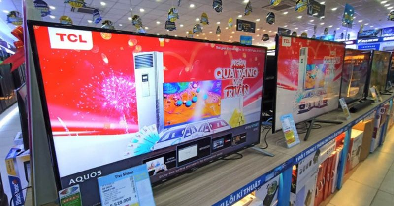
Sự thực về tivi 3 triệu đồng tràn ngập thị trường; giá hàng hóa neo cao dù xăng dầu giảm mạnh 🔗 MOI
Sự thực về tivi 3 triệu đồng tràn ngập thị trường Trong bối cảnh người tiêu dùng ngày càng cân nhắc chi tiêu, nhiều mẫu tivi giá rẻ chỉ khoảng 3 triệu đồng đang được các trung tâm điện máy chào bán, k

Những 'tay chơi' mới nổi trong ngành điện: Từ các đại gia bất động sản lấn sân tới 'anh cả' ngành thép mở rộng thị trường 🔗 MOI
KBC&VIC&HPG: Giá hiện tại Thay đổi Xem hồ sơ doanh nghiệp TIN MỚI Việc Chính phủ phê duyệt Điều chỉnh Quy hoạch điện VIII cùng với Nghị quyết 70 của Bộ Chính trị về bảo đảm an ninh năng lượng quốc gia

Chiến sự Trung Đông hé lộ sức ép kinh tế của ông Trump 🔗 MOI
Sau 7 tuần xung đột, Reuters dẫn các nguồn phân tích cho rằng Tổng thống Mỹ Donald Trump chưa thể buộc Iran đáp ứng tất cả yêu cầu của mình. Chiến sự còn cho thấy nguy cơ về sức ép kinh tế khiến cả Mỹ
Cầm bằng đại học, nợ 1 tỷ đồng rồi thất nghiệp vì AI: Thế hệ Gen Z giành giật việc làm với Robot 🔗 MOI
Cầm bằng đại học 4 năm, nợ 1 tỷ đồng rồi thất nghiệp vì AI: Thế hệ Gen Z và cuộc chiến giành giật việc làm từ tay Robot Băng Băng | 19/04/2026 13:41 PM | Công nghệ Theo dõi Cafebiz.vn trên Giá trị bằn
Hùng An - thiên niên đại kế của Trung Quốc 🔗 MOI
Tổng Bí thư, Chủ tịch nước Tô Lâm và các đại biểu Việt Nam tại Khu mới Hùng An ngày 14-4 - Ảnh: TTXVN Khác với hai biểu tượng cải cách trước đó là Khu mới Phố Đông và Đặc khu kinh tế Thâm Quyến, Hùng
Phải ngăn chặn từ gốc các sai phạm trong kinh doanh bất động sản 🔗 MOI
Dự án khách sạn, căn hộ Bavico Nha Trang trên đất quốc phòng đã bị kê biên trong vụ án "lừa đảo chiếm đoạt tài sản" - Ảnh: PHAN SÔNG NGÂN Thiệt hại từ những dự án bất động sản sai p

Tên lửa Iran 90.000 USD 'khắc chế' drone triệu đô của Mỹ 🔗 MOI
Tên lửa 358 của Iran, còn được gọi là SA-67, nặng khoảng 50kg và sử dụng đầu dò hồng ngoại để dẫn đường mục tiêu - Ảnh: SCMP Loại tên lửa tuần kích 358 của Iran , còn được gọi là tên lửa phòng không S

Wall Street Journal: Quân đội Mỹ chuẩn bị khám xét tàu dầu liên quan đến Iran 🔗 MOI
Các tàu trên biển Hormuz ở ngoài khơi Oman ngày 18-4 - Ảnh: REUTERS Ngày 18-4, tờ Wall Street Journal dẫn lời quan chức Mỹ cho biết Washington sẽ tiếp tục tăng sức ép lên Iran thông qua việc truy đuổi
Lãi suất ngân hàng Techcombank mới nhất: Kỳ hạn nào có lãi suất cao nhất hiện nay? 🔗 MOI
TIN MỚI Ngân hàng TMCP Kỹ Thương Việt Nam (Techcombank) mới đây đã cập nhật biểu lãi suất huy động mới áp dụng từ ngày 11/04/2026. Theo đó, lãi suất các kỳ hạn dưới 6 tháng tiếp tục duy trì ở mức cao
Bế tắc với Iran, Mỹ mở mặt trận mới khắp đại dương 🔗 MOI
TIN MỚI Các quan chức Mỹ cho biết quân đội nước này đang chuẩn bị triển khai chiến dịch ập lên các tàu chở dầu liên quan đến Iran để kiểm tra và tịch thu các tàu thương mại liên quan đến Iran trên vùn

Lần đầu tiên trong lịch sử, 'quái vật' AI mất kiểm soát khiến giới tài chính toàn cầu chấn động 🔗 MOI
Lần đầu tiên trong lịch sử, 'quái vật' AI mất kiểm soát khiến giới tài chính toàn cầu chấn động Lại Dịu | 19/04/2026 08:31 AM | Công nghệ Theo dõi Cafebiz.vn trên Cuộc đối đầu AI và ngành ngân hàng có

5 cách đơn giản giúp xe điện đi xa hơn sau mỗi lần sạc, tài xế Việt đừng bỏ qua 🔗 MOI
Không còn cảnh ghé trạm xăng, không mùi nhiên liệu, không tiếng động cơ gầm rú, khả năng vận hành êm ái, tăng tốc tức thì và chi phí sử dụng thấp, đó là những ưu điểm của xe điện khiến nhiều người dùn
Cận cảnh công trường dự án mở rộng sân bay Phú Quốc phục vụ APEC 2027 🔗 MOI
TIN MỚI Trong 21 dự án phục vụ Diễn đàn kinh tế châu Á - Thái Bình Dương 2027 (APEC 2027), dự án mở rộng Cảng Hàng không Quốc tế Phú Quốc (đặc khu Phú Quốc, tỉnh An Giang) là một trong những công trìn
20 đại học Mỹ được doanh nghiệp săn đón nhất 🔗 MOI
Tờ Forbes tuần trước công bố danh sách "New Ivies" - các đại học Mỹ được nhà tuyển dụng đánh giá cao về chất lượng cử nhân, ngoài nhóm 8 trường Ivy League truyền thống. Dữ liệu được tổng hợp từ khảo s

Giá xăng dầu hôm nay 19/4: Dầu thế giới giảm mạnh, dầu diesel có tuần hạ nhiệt 🔗 MOI
Giá dầu thế giới hôm nay Giá dầu thế giới tuần này ghi nhận tuần biến động mạnh, với 3 phiên tăng và 2 phiên giảm. Tại phiên giao dịch đầu tiên của tuần (13/4), giá dầu thế giới tăng khoảng 4% sau khi
Người dân bang Maryland, Mỹ bị phạt vì đỗ xe ngay trước cửa nhà mình 🔗 MOI
Cư dân Annapolis bị phạt 200 USD vì chặn lối vào nhà của chính họ - Ảnh: Google Maps Tại nhiều nơi, việc đỗ xe trước cửa nhà là điều hiển nhiên với các hộ gia đình. Tuy nhiên ở thành phố Annapolis, ba
Một công ty dầu khí tại TP.HCM bất ngờ lãi quý 1 gấp 4.997 lần năm ngoái 🔗 MOI
Lãi sau thuế của PV GAS D tăng mạnh nhờ lợi nhuận gộp được cải thiện - Ảnh: PGD Công ty cổ phần Phân phối khí thấp áp dầu khí Việt Nam (PV GAS D - mã: PGD) vừa công bố báo cáo tài chính quý 1-2026 với
Thêm ngân hàng thu hồi nợ của Bamboo Airways 🔗 MOI
Ngân hàng Hàng hải Việt Nam (MSB) cho biết sẽ thu giữ tài sản bảo đảm để thu hồi nợ theo thỏa thuận trong hợp đồng thế chấp ký với Công ty cổ phần Hàng không Tre Việt (Bamboo Airways). Danh mục tài sả

Dự báo về lãi suất điều hành 🔗 MOI
TIN MỚI Khối Nghiên cứu thị trường và kinh tế toàn cầu Ngân hàng vừa công bố báo cáo tăng trưởng kinh tế Việt Nam quý I vừa qua. UOB dẫn số liệu từ Tổng cục Thống kê cho thấy, tăng trưởng GDP quý I đạ

Diễn biến lạ hiếm gặp của giá vàng, nhà đầu tư cần thận trọng 🔗 MOI
Giá vàng đảo chiều liên tục, xuất hiện nhịp lệch pha Diễn biến thị trường vàng 3 ngày gần đây cho thấy một nhịp vận động đáng chú ý, đặc biệt là hiện tượng lệch pha giữa trong nước và thế giới trong p

Xung đột Trung Đông thúc đẩy các nước đầu tư điện hạt nhân 🔗 MOI
Khi 20% nguồn cung dầu khí toàn cầu gián đoạn do tắc nghẽn ở eo biển Hormuz, các quốc gia châu Phi và châu Á có nhà máy điện hạt nhân đang tăng sản lượng để đáp ứng nhu cầu năng lượng ngắn hạn. Tại Đô

Hà Nội đưa thêm 53 xe buýt điện vào hoạt động 🔗 MOI
Với lượt bổ sung mới nhất, tổng số xe buýt điện, năng lượng xanh toàn mạng ở Hà Nội là 699 xe. Theo kế hoạch, từ nay đến hết năm 2026, thành phố tiếp tục đưa thêm xe buýt điện vào hoạt động, đồng thời

Loạt SUV hybrid mới sắp đổ bộ Việt Nam: Phần lớn giá trên 1 tỉ, có mẫu dễ 'kèm lạc' 🔗 MOI
Thiết kế ngoại thất và nội thất của Hyundai Tucson hybrid dự kiến không có nhiều khác biệt so với bản máy xăng đang bán - Ảnh: Hyundai Hyundai Tucson Các đại lý Hyundai đã bắt đầu nhận đặt cọc Tucson
Justin Bieber biến Coachella thành 'đế chế' bán hàng 5 triệu USD 🔗 MOI
Thương hiệu thời trang của Justin Bieber thu 5 triệu USD trong ngày đầu tại Coachella - Ảnh: Coachella Theo The Street , lễ hội âm nhạc Coachella 2026 có sự khác biệt rõ rệt so với các năm trước, khôn
Tây Ban Nha, Brazil, Mexico cam kết tăng viện trợ cho Cuba 🔗 MOI
Người dân Cuba tuần hành hôm 16-4 nhân kỷ niệm 65 năm sự kiện vịnh Con Lợn - Ảnh: AFP Trong tuyên bố chung của Tây Ban Nha, Brazil và Mexico ngày 18-4, Mỹ không được đề cập trực tiếp. Tuy nhiên theo g
Kiều hối chuyển về TP.HCM bất ngờ đi xuống 🔗 MOI
Lượng kiều hối chuyển về TP.HCM qua các ngân hàng và công ty kiều hối giảm 15,6% so với quý 4-2025 - Ảnh: NGỌC PHƯỢNG Vì sao kiều hối bất ngờ giảm? Ngân hàng Nhà nước (NHNN) chi nhánh Khu vực 2 cho bi
Thỏa thuận Mỹ - Iran sắp định hình 🔗 MOI
Mỹ - Iran đang nỗ lực đạt thỏa thuận hòa bình dù gặp nhiều trở ngại - Ảnh: AFP Ngày 17-4, Ngoại trưởng Iran Abbas Araghchi cho biết eo biển Hormuz đã " mở cửa hoàn toàn " cho tàu thương mại trong thời

Giáo hoàng Leo XIV giải thích về căng thẳng với ông Trump 🔗 MOI
Giáo hoàng Leo XIV nói chuyện với các nhà báo trên chuyến bay đến Luanda, Angola ngày 18-4 - Ảnh: REUTERS Theo Hãng tin Reuters, trả lời báo chí bằng tiếng Anh trên chuyến bay tới Angola trong chuyến
Hai người mất tích trên sông Tiền sau tiệc sinh nhật 🔗 MOI
Tối qua, ông Võ Văn Tùng (53 tuổi, ngụ phường Thới Sơn, Đồng Tháp) cùng ông Trịnh Quang Sơn (73 tuổi, ở TP HCM) và khoảng 10 người dự tiệc sinh nhật trên tàu du lịch do Nguyễn Thanh Tân (23 tuổi) điều
Phải cẩu nhà, dời đi vì xây nhầm trên đất hàng xóm 🔗 MOI
Đầu tháng 4, David và Melanie Moor thuê đội vận chuyển cắt rời ngôi nhà 4 phòng ngủ để cẩu sang lô đất liền kề tại thị trấn Camperdown, bang Victoria. Việc di dời khép lại vụ tranh chấp pháp lý kéo dà
Thị trường sôi động trước siêu chính sách ‘khóa trần’ lãi suất của Vinhomes 🔗 MOI
Khách hàng và nhà đầu tư nườm nượp đổ về sự kiện “Tọa độ xanh - Đô thị biển quốc tế” để chớp cơ hội, sở hữu tài sản thực tại Vinhomes Green Paradise. ‘Lãi vay mua nhà Vinhomes thấp hơn vay mua NƠXH’ N
Kỷ lục Guinness cho Robot thú cưng AI "vô dụng" nhất thế giới thuộc về Nhật Bản, chữa lành nỗi cô đơn cho người già 🔗 MOI
Kỷ lục Guinness cho Robot AI "vô dụng" nhất thế giới thuộc về Nhật Bản, dùng để chữa lành nỗi cô đơn cho người già Quỳnh Phương | 19/04/2026 09:49 AM | Công nghệ Theo dõi Cafebiz.vn trên Giữa thời đại

Bé trai mất tích sau khi bị bố đánh, công an phát thông báo truy tìm 🔗 MOI
Tối 18/4, trao đổi với PV VietNamNet, một lãnh đạo xã Mỏ Vàng cho biết, hiện tại các lực lượng chức năng của xã và tỉnh Lào Cai đang nỗ lực tìm kiếm cháu A. Theo vị lãnh đạo xã, trước đó, vào ngày 9/4

Bé trai mất tích sau khi bị bố đánh, lãnh đạo xã tiết lộ chi tiết khó tin 🔗 MOI
Tối 18/4, trao đổi với PV VietNamNet, một lãnh đạo xã Mỏ Vàng cho biết, bố cháu A. là anh P.V.S. đã làm việc với cơ quan chức năng.

Diện mạo Trung tâm Hội nghị APEC ở Phú Quốc dần lộ diện sau 10 tháng thi công 🔗 MOI
TIN MỚI Năm 2027 là lần thứ ba Việt Nam giữ cương vị Chủ tịch Diễn đàn kinh tế châu Á - Thái Bình Dương (APEC). Địa điểm được Trung ương xác định tổ chức là tại đặc khu Phú Quốc (tỉnh An Giang). Với 2

Bị sa thải vì AI, người đàn ông 48 tuổi "trả thù" bằng cách dùng 12 trợ lý ảo kiếm 7,5 tỷ đồng 🔗 MOI
Bị sa thải vì AI, người đàn ông 48 tuổi "trả thù" bằng cách dùng 12 trợ lý ảo kiếm 7,5 tỷ đồng Băng Băng | 19/04/2026 07:52 AM | Công nghệ Theo dõi Cafebiz.vn trên Đừng đợi AI sa thải bạn, hãy học các

Giá vàng hôm nay 19/4/2026 chốt tuần tăng, vàng SJC lên 172 triệu đồng/lượng 🔗 MOI
Giá vàng thế giới hôm nay 19/4/2026 Giá vàng thế giới tuần qua diễn biến giằng co nhưng vẫn duy trì xu hướng tích cực. Đầu tuần, giá vàng giao ngay ở mức 4.676 USD/ounce, sau đó nhanh chóng phục hồi v

Tặng hơn 100 nghìn suất học bổng, khóa học đào tạo AI, công nghệ số cho người khuyết tật 🔗 MOI
Thành viên Hội Thầy thuốc trẻ khám bệnh miễn phí cho người khuyết tật - Ảnh: ĐĂNG HẢI Đây là một trong chuỗi các hoạt động của chương trình kỷ niệm Ngày Người khuyết tật Việt Nam 18-4 - Inspire Fest 2
Điện Máy Xanh gần hoàn tất thủ tục IPO năm 2026 🔗 MOI
Ông Đoàn Văn Hiểu Em - CEO DMX, đồng thời là thành viên HĐQT MWG - Ảnh: TGDĐ Tại Đại hội đồng cổ đông (ĐHĐCĐ) thường niên năm 2026 của Công ty cổ phần đầu tư Thế Giới Di Động (MWG) tổ chức chiều 18-4,

Nghịch lý: Doanh nghiệp làm ăn tốt, cổ phiếu vẫn 'cắm đầu' 🔗 MOI
Những cổ phiếu tập trung nhiều nhà đầu tư nhỏ lẻ thường có xu hướng biến động mạnh do tâm lý thị trường chi phối. Trong ảnh: Đại hội cổ đông của một doanh nghiệp đông cổ đông - Ảnh: H.M Diễn biến này
Công an điều tra, truy tìm bé trai ở Lào Cai mất tích nhiều ngày 🔗 MOI
Trao đổi với Tuổi Trẻ Online sáng 19-4, ông Đỗ Cao Quyền - Chủ tịch UBND xã Mỏ Vàng (tỉnh Lào Cai) - cho biết cơ quan công an đang điều tra, truy tìm một bé trai 12 tuổi ở địa bàn mất tích từ ngày 9-4
Lộ diện loạt doanh nghiệp đầu ngành góp vốn lập Quỹ đầu tư mạo hiểm TP.HCM 🔗 MOI
VIC&FPT&VNZ: Giá hiện tại Thay đổi Xem hồ sơ doanh nghiệp TIN MỚI Chiều 17/4, UBND TP.HCM công bố ra mắt Quỹ đầu tư mạo hiểm hoạt động dưới hình thức công ty cổ phần. Quỹ có tên đầy đủ là Công ty Cổ p
Khoảng 2,3 triệu hộ kinh doanh đã đăng ký eTax Mobile 🔗 MOI
TIN MỚI Người nộp thuế dùng ứng dụng eTax Mobile. Ảnh: Thu Hiền/TTXVN Đây là thực tế được nêu ra tại hội thảo "Hộ kinh doanh: Minh bạch dòng tiền, mở rộng cơ hội kinh doanh", do Cục Thuế (Bộ Tài chính
Kỷ lục Guinness cho Robot AI "vô dụng" nhất thế giới thuộc về Nhật Bản, dùng để chữa lành nỗi cô đơn cho người già 🔗 MOI
TIN MỚI Đại học Oita (Nhật Bản) hiện đang tiến hành kêu gọi vốn cộng đồng để hỗ trợ một sinh viên cao học đang phát triển loại robot biết "nhõng nhẽo" nhằm khuyến khích người cao tuổi ra khỏi nhà. Thô
Loạt lãnh đạo doanh nghiệp niêm yết vướng vòng lao lý 🔗 MOI
TIN MỚI Chủ tịch và Phó Chủ tịch Tập đoàn Hóa chất Đức Giang Theo thông tin do Bộ Công an công bố, ngày 25/12/2025 và ngày 14/3/2026, Cục Cảnh sát điều tra tội phạm về tham nhũng, kinh tế, buôn lậu đã
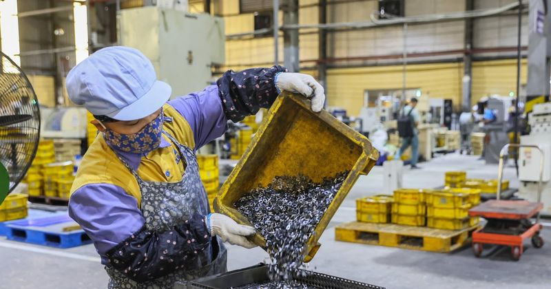
Hộ kinh doanh lưu ý gì trong kỳ kê khai thuế đầu tiên? 🔗 MOI
TIN MỚI Theo bà Lê Thị Chinh, Phó trưởng Ban Nghiệp vụ thuế cho biết, Nghị định 68 và Thông tư 18 của Bộ Tài chính vừa mới ban hành đã quy định cụ thể về chính sách và quản lý thuế đối với hộ kinh doa

Thế giới di động và những 'đại gia' muốn mở rộng kinh doanh bất động sản 🔗 MOI
MWG&FOX&PAN: Giá hiện tại Thay đổi Xem hồ sơ doanh nghiệp TIN MỚI Thế giới di động CTCP Đầu tư Thế giới Di động (mã MWG) là một ông lớn trong ngành bán lẻ nhưng cũng gây chú ý khi muốn bổ sung thêm ng

Chàng trai Mỹ học văn hóa Việt để chinh phục bố vợ 🔗 MOI
Alec Gast và Luyện Nguyễn (cùng 35 tuổi) quen nhau 19 năm trước, khi học chung lớp 10 tại trường phổ thông ở Chicago, bang Illinois, Mỹ. Kỷ niệm thời học sinh của họ là lần cô gái gốc Việt chặn đường

Kiều hối chuyển về TP HCM giảm mạnh đầu năm 🔗 MOI
Theo Ngân hàng Nhà nước chi nhánh Khu vực 2 (TP HCM và Đồng Nai), dòng kiều hối có xu hướng giảm từ quý IV/2025 sang đầu năm nay. Trong quý cuối năm 2025, lượng kiều hối chuyển về đạt gần 2,4 tỷ USD,

Xả súng ở Kiev khiến nhiều người chết, ông Zelensky lên tiếng 🔗 MOI
Xe cứu thương đến hiện trường vụ xả súng ở Kiev, Ukraine ngày 18-4 - Ảnh: REUTERS Theo Hãng tin Reuters, Thị trưởng Kiev , ông Vitali Klitschko cho biết cảnh sát đã tìm cách bắt giữ nghi phạm trong mộ
Qualcomm hợp tác CXMT phát triển DRAM riêng cho smartphone giữa lúc nguồn cung khan hiếm 🔗 MOI
Qualcomm hợp tác CXMT phát triển DRAM riêng cho smartphone giữa lúc nguồn cung khan hiếm Theo Max | 19/04/2026 13:00 PM | Công nghệ Theo dõi Cafebiz.vn trên Giá DRAM tăng mạnh do nhu cầu AI khiến các
Tại sao cả ngành bán dẫn lại đang phụ thuộc vào một hãng bột ngọt Nhật Bản? 🔗 MOI
TIN MỚI Nếu bạn nghĩ Ajinomoto chỉ gắn liền với những gói bột ngọt quen thuộc trong gian bếp, thì có lẽ bạn đã bỏ lỡ một trong những "bí mật" quyền lực nhất của ngành công nghiệp bán dẫn toàn cầu. Ít
Vision Pro thất bại 2024 khiến Apple Store hỗn loạn và nội bộ căng thẳng 🔗 MOI
Vision Pro thất bại: Siêu phẩm 3.500 USD khiến nội bộ căng thẳng, Apple Store hỗn loạn, trở thành 'bom xịt' của CEO Tim Cook Lại Dịu | 19/04/2026 11:07 AM | Công nghệ Theo dõi Cafebiz.vn trên Doanh th
Cố sinh con ở Mỹ dù đã bị trục xuất 🔗 MOI
Diana Acosta Verde, 27 tuổi, từ Honduras vượt biên vào Mỹ 4 năm trước và xin tị nạn dưới thời chính quyền tổng thống Joe Biden. Sau đó cô gặp bạn trai Jaime Murillo Padilla, người được bố mẹ đưa vào M
Mỹ dựng “lá chắn thép” ngoài khơi Iran: Tàu khu trục làm xương sống, Hormuz nóng lên từng giờ 🔗 MOI
TIN MỚI Tàu khu trục Mỹ là trọng tâm của chiến dịch phong tỏa Các tàu khu trục mang tên lửa dẫn đường của hải quân Mỹ đang đóng vai trò trung tâm trong chiến dịch phong tỏa quân sự các cảng của Iran,
Điện ảnh Việt từng có một bộ phim quy tụ dàn sao có thành tích 'khủng' 🔗 MOI
Chơi vơi (2009) của đạo diễn Bùi Thạc Chuyên là một trong những tác phẩm mang đậm dấu ấn cá nhân của điện ảnh Việt, giai đoạn cuối những năm 2000. Bộ phim gây chú ý khi là phim nhựa đầu tiên của Việt
Đối chiếu sinh trắc học từng giao dịch ngăn chặn gian lận, bảo vệ khách hàng 🔗 MOI
TIN MỚI Trong bối cảnh kinh tế số, chuyển đổi số ngày càng mở rộng phạm vi và chiều sâu trong tất cả các ngành, lĩnh vực, Ngân hàng Nhà nước Việt Nam (NHNN) chủ trương vừa chú trọng phát triển dịch vụ
Robot hình người Trung Quốc vượt kỷ lục nhà vô địch marathon 🔗 MOI
Hàng chục robot hình người do Trung Quốc sản xuất tham gia cuộc chạy đua bán marathon (21 km) tổ chức ngày 19/4, với khả năng vận động cải thiện rõ rệt so với năm trước, cho thấy bước tiến nhanh của c

Iran suýt nổ súng vào tàu quét thủy lôi của Mỹ ở eo biển Hormuz 🔗 MOI
Lực lượng chức năng Iran. Ảnh: Tasnim Hãng tin Tasnim dẫn lời Chủ tịch Quốc hội Iran Mohammad Bagher Ghalibaf cho biết nếu tàu quét thủy lôi của Mỹ "di chuyển khỏi vị trí về phía trước dù chỉ một chút

Clip ô tô bị tàu hoả tông biến dạng ở Hà Nội: Tình trạng tài xế và nguyên nhân tai nạn 🔗 MOI
Clip ô tô bị tàu hoả tông biến dạng ở Hà Nội: Tình trạng tài xế và nguyên nhân tai nạn Theo Trang Anh | 19/04/2026 09:17 AM | Xã hội Theo dõi Cafebiz.vn trên Qua kiểm tra sau đó, Cảnh sát xác định tài

2 ngày nữa là hạn chót hộ kinh doanh phải thông báo số tài khoản 🔗 MOI
2 ngày nữa là hạn chót hộ kinh doanh phải thông báo số tài khoản Theo Huỳnh Duy | 19/04/2026 08:30 AM | Công nghệ Theo dõi Cafebiz.vn trên Sắp đến hạn chót hộ kinh doanh phải thông báo số tài khoản ch

Trực thăng tấn công của Mỹ xuất hiện ở eo biển Hormuz 🔗 MOI
Trực thăng tấn công Mỹ trên eo biển Hormuz. Ảnh: CENTCOM Hãng thông tấn Tasnim và trang Aviationist đưa tin, Iran ngày 18/4 đã nổ súng vào ít nhất 3 tàu, gồm một tàu chở dầu và 2 tàu thương mại, cố đi
Sinh viên check-in tìm việc bằng hộ chiếu số tại ngày hội việc làm 🔗 MOI
Ngô Văn Long - sinh viên khoa xây dựng cầu đường (thứ hai từ phải) hỗ trợ các sinh viên khác "check-in" bằng "hộ chiếu sự nghiệp điện tử" - Ảnh: CHÂU SA Ngày 18-4, khuôn viên Trường đại học Bách khoa
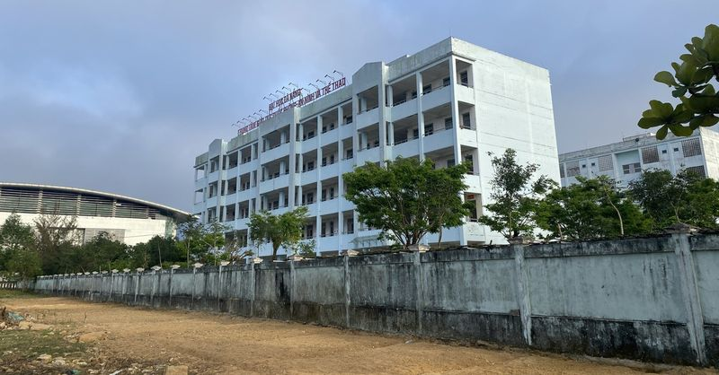
Đô thị đại học gắn với Tam Kỳ 'ở đâu' trong quy hoạch Đà Nẵng mới? 🔗 MOI
Một góc làng đại học Đà Nẵng đang hình thành tại Hòa Quý - Điện Bàn Đông - Ảnh: TRƯỜNG TRUNG Định hướng quy hoạch Đà Nẵng có 2 "khu đô thị đại học" Vừa qua đã có nhiều ý kiến đề xuất chuyển các trường

Tay đua 66 tuổi qua đời sau tai nạn liên hoàn trên đường đua Nurburgring 🔗 MOI
Ông Juha Miettinen qua đời sau tai nạn trên đường đua - Ảnh: Racingnews Vụ tai nạn xảy ra ngay từ đầu cuộc đua, khi một vụ va chạm liên hoàn của 7 chiếc xe đã làm gián đoạn cuộc đua. Cuộc đua ngay lập
Wit Studio trở lại với dự án mới sau ồn ào dùng AI trong Ascendance of a Bookworm 🔗 MOI
Sau vụ việc sử dụng AI gây tranh cãi, Wit Studio tiếp tục với các dự án mới - Ảnh: Wit Studio Mùa anime xuân 2026 đánh dấu sự trở lại của nhiều bộ phim đáng chú ý, trong đó có Ascendance of a Bookworm

Anh trai say hi concert: Pháo hoa không 'hoành' nhưng đỡ phải nghe cảm ơn nhà tài trợ 🔗 MOI
Bài hát Cách yêu đúng điệu của các em xinh với phiên bản Anh trai ngộ nghĩnh - Ảnh: BTC Trước giờ G, Anh trai say hi concert đêm 9 - Reply 2024 từng vướng nhiều tranh luận xoay quanh việc thay đổi vị
Video giây phút hung thủ xả súng khiến nhiều người chết tại Ukraine 🔗 MOI
Xe bị lật nhiều vòng vì tông phải cá sấu, nữ tài xế thoát chết thần kỳ 🔗 MOI
Hình ảnh chiếc xe sau vụ tai nạn - Ảnh: CBS12 Một vụ tai nạn xảy ra tại bang Florida (Mỹ) khi một phụ nữ tông phải cá sấu trên đường, khiến chiếc xe bị lật nhiều vòng và hư hỏng nặng. Nạn nhân là Masl
Google tích hợp AI vào Chrome, tìm kiếm không cần mở trang 🔗 MOI
Google tích hợp AI vào thanh địa chỉ Chrome, biến trình duyệt thành trợ lý thông minh - Ảnh: Google Mới đây, Google tích hợp trí tuệ nhân tạo trực tiếp vào thanh địa chỉ Chrome, đánh dấu thay đổi đáng
Văn Tuần thắng đòn bẻ tay để giữ đai vô địch 56kg 🔗 MOI
Lê Văn Tuần bảo vệ thành công đai vô địch 56kg - Ảnh: LC30 Trận tranh đai hạng cân 56kg tại Lion Championship - LC30 - khép lại với chiến thắng thuyết phục và giàu cảm xúc dành cho Lê Văn Tuần trước T
Đồng tiền đẫm máu từ ma tuý Mỹ Latin - Kỳ 1: 'Chúa tể gà trống' El Mencho 🔗 MOI
Báo chí Mexico đưa tin trùm ma túy El Mencho bị tiêu diệt ngày 22-2-2026 - Ảnh: Reuters Ngày 7-3-2026 (giờ địa phương), trong khuôn khổ hội nghị cấp cao "Lá chắn châu Mỹ" tại Florida, Chính phủ Mỹ đã
Hai người dự tiệc sinh nhật rơi xuống sông mất tích khi tàu cập bến tại Mỹ Tho 🔗 MOI
Đội bóng Trung Quốc thắng trận nhờ... mời Hạng Vũ xuất trận 🔗 MOI
Hình tượng Hạng Vũ gây sốt ở trận bóng đá cấp tỉnh Trung Quốc - Ảnh: SOHU Trận đấu kể trên diễn ra tối 18-4 trên sân Olympic Túc Thiên, thuộc Giải bóng đá các thành phố tỉnh Giang Tô 2026, còn được ng
Tăng tốc xử lý đất yếu đoạn phía tây vành đai 3 TP.HCM sau phản ánh của Tuổi Trẻ 🔗 MOI
Máy chuyên dụng cắm bấc thấm xuống nền đất yếu theo mạng lưới dày đặc, tạo đường dẫn thoát nước trong lòng đất ở gói thầu phía tây dự án vành đai 3 TP.HCM Vành đai 3 TP.HCM đoạn phía tây gồm 5 gói (XL
Bọ chét chó, mèo ‘tấn công’ người, gây ngứa ngáy, viêm da vì điều trị sai cách 🔗 MOI
Tổn thương da lan rộng sau khi bị bọ chét cắn nhưng điều trị sai cách - Ảnh: BVCC Điều trị sai cách khiến tổn thương lan rộng Nam thanh niên 20 tuổi đến Bệnh viện Da liễu Trung ương trong tình trạng s
Hai người đàn ông té xuống sông Tiền mất tích sau khi dự tiệc sinh nhật trên tàu du lịch 🔗 MOI
Cơ quan công an điều tra vụ việc - Ảnh: HOÀI THƯƠNG Sáng 19-4, Đội Cảnh sát phòng cháy chữa cháy và cứu nạn cứu hộ trên sông Công an tỉnh Đồng Tháp vẫn đang phối hợp Công an phường Đạo Thạnh và các đơ

TP.HCM muốn bắt tay đại học, viện nghiên cứu để gỡ bài toán lớn về tăng trưởng 🔗 MOI
Các chuyên gia, doanh nghiệp và nhà quản lý cùng thảo luận về bài toán hợp tác trong bối cảnh phát triển mới - Ảnh: BTC Tại Hội nghị UEH Partnerships Summit 2026 do Đại học Kinh tế TP.HCM (UEH) tổ chứ

Người đàn ông nổ súng sau va chạm giao thông ở khu đô thị 🔗 MOI
Hình ảnh trích xuất từ camera ghi lại diễn biến vụ va chạm giao thông - Ảnh: Công an tỉnh Hưng Yên Tối 18-4, Công an tỉnh Hưng Yên thông tin về vụ việc người đàn ông nổ súng sau va chạm giao thông . T

Tin tức thế giới 19-4: Iran nói đàm phán với Mỹ tiến triển, nhưng vẫn đóng eo biển Hormuz 🔗 MOI
Tuần hành ở Tehran, Iran, ngày 18-4 để tưởng niệm những người phụ nữ đã thiệt mạng ở nước này do xung đột - Ảnh: AFP Iran đóng eo biển Hormuz, Mỹ đưa ra đề xuất mới Ngày 18-4 (giờ địa phương), Hội đồn
Iran nổ súng chặn hai tàu Ấn Độ đi qua eo biển Hormuz 🔗 MOI
Xuồng cao tốc của Iran di chuyển trên eo biển Hormuz - Ảnh: AP Theo các nguồn tin của Đài NDTV, tàu Jag Arnav và Sanmar Herald treo cờ Ấn Độ "đã bị tấn công trực diện" tại eo biển Hormuz ngày 18-4, là
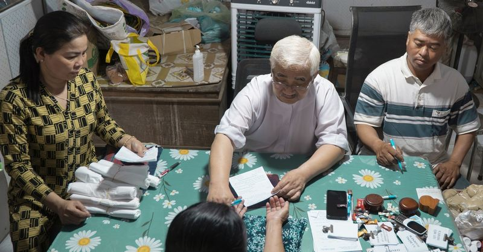
Tấm lòng giúp người của ông Tư Ngoan 🔗 MOI
Ông Tư Ngoan (tóc bạc) chẩn đoán và cấp thuốc nam miễn phí hoàn toàn - Ảnh: AN VI Phòng khám ấy nổi tiếng đến độ mới tới bến phà Năng Gù cách đó gần 20km, hỏi phòng khám Tư Ngoan ở đâu thì tất cả cùng
TP.HCM đẩy nhanh đốt rác phát điện 🔗 MOI
Dự án đốt rác phát điện của Công ty cổ phần Vietstar tại khu xử lý rác Tây Bắc TP.HCM đang thi công - Ảnh: L.P. Mỗi ngày, khối lượng rác phát sinh trên toàn thành phố lên tới khoảng 14.000 tấn, buộc t
Từ 1-7, thông tin lý lịch tư pháp sẽ hiển thị trên ứng dụng VNeID 🔗 MOI
Giao diện ứng dụng VNeID - Ảnh: DANH TRỌNG Bộ Công an đang xây dựng dự thảo thông tư quy định sử dụng biểu mẫu; quản lý, sử dụng, khai thác cơ sở dữ liệu lý lịch tư pháp; trình tự, thủ tục cấp phiếu l
Đồng Nai: Bắt tạm giam 1 nguyên cán bộ phường lừa đảo hơn 28 tỉ đồng 🔗 MOI
Đồng Nai: Bắt tạm giam 1 nguyên cán bộ phường lừa đảo hơn 28 tỉ đồng Theo Nguyễn Tuấn | 19/04/2026 13:31 PM | Xã hội Theo dõi Cafebiz.vn trên Nguyệt lợi dụng nội dung ủy quyền để thực hiện chuyển nhượ
Cảnh giác vì cuộc gọi lừa đảo đọc vanh vách số thẻ ngân hàng, CCCD: Dữ liệu của bạn đã bị bán đi đâu? 🔗 MOI
Cảnh giác vì cuộc gọi lừa đảo đọc vanh vách số thẻ ngân hàng, CCCD: Dữ liệu của bạn đã bị bán đi đâu? Theo Khả Văn | 19/04/2026 12:59 PM | Xã hội Theo dõi Cafebiz.vn trên Kẻ lừa đảo không hề ngẫu nhiê
Hai người đàn ông rơi xuống sông mất tích sau tiệc sinh nhật trên tàu du lịch 🔗 MOI
Sáng 19/4, lực lượng Cảnh sát phòng cháy chữa cháy và cứu nạn, cứu hộ Công an tỉnh Đồng Tháp phối hợp với Công an phường Đạo Thạnh cùng các đơn vị liên quan tìm kiếm hai người rơi xuống sông Tiền mất
Bắt Phan Văn Lợi SN 1986 - chủ của 567 tấn da bò đổ trái phép ra môi trường 🔗 MOI
Bắt Phan Văn Lợi SN 1986 - chủ của 567 tấn da bò đổ trái phép ra môi trường Theo Trang Anh | 19/04/2026 12:18 PM | Xã hội Theo dõi Cafebiz.vn trên Cơ quan điều tra xác định, hành vi của Phan Văn Lợi v
Ngân hàng tư nhân đầu tiên có lượng tài sản thế chấp vượt 3 triệu tỷ 🔗 MOI
TIN MỚI Ảnh minh họa Theo báo cáo tài chính quý 1/2026 vừa được Ngân hàng TMCP Việt Nam Thịnh Vượng (VPBank) công bố, lượng tài sản thế chấp tại nhà băng này đã vượt mốc 3 triệu tỷ đồng. Tại thời điểm
Miền Bắc mưa dông rải rác ngày 19 / 4: Nhiệt độ dễ chịu và cảnh báo thiên tai 🔗 MOI
Miền Bắc đón thêm nhiều đợt mưa dông Theo Nguyễn Hoài | 19/04/2026 11:36 AM | Xã hội Theo dõi Cafebiz.vn trên Ngày hôm nay (19/4), miền Bắc và Thanh Hoá tiếp tục có mưa rào và dông rải rác, cục bộ có
Mưa đá ở Sơn La 2026: Thiên tai bất ngờ gây thiệt hại lớn cho người dân 🔗 MOI
Mưa đá dày đặc ở Sơn La, đồi núi trắng xóa sau cơn dông Theo Viên Minh/VTC | 19/04/2026 11:27 AM | Xã hội Theo dõi Cafebiz.vn trên Tối 18/4, mưa đá bất ngờ trút xuống xã Phiêng Cằm (tỉnh Sơn La), nhữn
Lần đầu tiên Vingroup, Sovico, VinaCapital, FPT, VNG… cùng góp vốn vào một quỹ đầu tư mạo hiểm, bất ngờ với cổ đông lớn nhất 🔗 MOI
TIN MỚI Ngày 17/4, CTCP Quỹ Đầu tư Mạo hiểm TP. Hồ Chí Minh (HCM VIF) chính thức ra mắt với vốn điều lệ ban đầu 500 tỷ đồng. Ngân sách Thành phố góp 40%, tương đương 200 tỷ đồng; 300 tỷ còn lại là sự

Negav nói Quang Hùng yêu 6 người một lúc, Tam Triều Dâng khen HIEUTHUHAI 🔗 MOI
Tối 18/4, concert thứ 9 của Anh trai say hi mùa 1 diễn ra tại TPHCM với chủ đề "REPLY 2024". Ngoại trừ Anh Tú Atus, Quang Trung vắng mặt, các “anh trai” còn lại và khách mời Bảo Anh, MAIQUINN, Lâm Bảo
Áo phao hành khách Titanic được đấu giá hơn 900.000 USD 🔗 MOI
Nhà đấu giá Henry Aldridge & Son của Anh ngày 18/4 tổ chức buổi đấu giá các kỷ vật liên quan thảm kịch Titanic xảy ra năm 1912. Nổi bật nhất trong số này là áo phao được bà Laura Mabel Francatelli, hà
Xả súng và bắt cóc con tin ở thủ đô Ukraine, ít nhất 6 người thiệt mạng 🔗 MOI
Trang truyền thông RBC Ukraine cho hay một nghi phạm có vũ trang đã xông vào siêu thị giữa thủ đô Kiev vào tối 18/4, khiến một số dân thường có mặt ở đó bị thương, bắt cóc các con tin và cố thủ trong
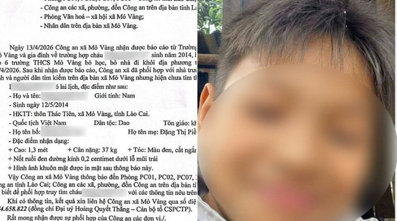
Nghi án bố đánh con trai 12 tuổi tử vong ở Lào Cai: Chi tiết gây sốc 🔗 MOI
Nghi án bố đánh con trai 12 tuổi tử vong vì cho rằng trộm 100.000 đồng: Công an thông tin chi tiết khó tin Theo Hương Trà | 19/04/2026 10:13 AM | Xã hội Theo dõi Cafebiz.vn trên Lãnh đạo UBND xã Mỏ Và

Người mua nhà chần chừ 'xuống tiền' khi lãi suất tăng 🔗 MOI
TIN MỚI Thanh khoản chậm lại Theo ông Nguyễn Thái Bình - Chủ tịch Hội đồng quản trị Công ty CP Đông Tây Land, hiện có 3 vấn đề khó khăn diễn ra trên thị trường bất động sản. Khó khăn đầu tiên là thanh

TP. Huế: Cận cảnh dự án 1.020 tỷ đồng ‘đắp chiếu’ kéo dài bị đề xuất thu hồi 🔗 MOI
TIN MỚI Năm 2017, Ban Quản lý Khu kinh tế, công nghiệp tỉnh Thừa Thiên Huế (nay là TP. Huế) cấp quyết định chủ trương đầu tư dự án khu du lịch Suối Voi cho Công ty TNHH Đầu tư Thương mại và dịch vụ H

Xả súng, bắt con tin ở Ukraine, 6 người chết 🔗 MOI
Kẻ tấn công ngày 18/4 nổ súng vào dân thường trên đường phố tại quận Holosiivskyi, thủ đô Kiev, rồi lao vào một siêu thị gần đó bắt con tin và cố thủ, thị trưởng Kiev Vitali Klitschko cho biết. Theo B

Thế Giới Di Động mở rộng sang bất động sản vì lý do hợp pháp và tối ưu hóa hiệu quả 🔗 MOI
Không phải để 'lấn sân', lãnh đạo Thế Giới Di Động nói rõ lý do thêm ngành bất động sản Thúy Hạnh | 19/04/2026 08:57 AM | Kinh doanh Theo dõi Cafebiz.vn trên Tổng Giám đống Công ty Cổ phần Thế Giới Di

Chi tiết 33 khu đất vàng TPHCM thanh toán cho nhà đầu tư làm dự án BT 🔗 MOI
TIN MỚI Tại kỳ họp thứ 2, HĐND TPHCM khóa XI, nhiệm kỳ 2026 - 2031 vào ngày 18/4 đã thông qua dự thảo nghị quyết về danh mục quỹ đất dự kiến thanh toán cho nhà đầu tư thực hiện các dự án BT (xây dựng

Công nghệ phẫu thuật thời gian thực: Bước tiến mới trong ngành y tế năm 2026 🔗 MOI
Phòng mổ “lột xác”: Công nghệ mới khiến kế hoạch trước mổ trở nên lỗi thời Lại Dịu | 19/04/2026 08:43 AM | Công nghệ Theo dõi Cafebiz.vn trên Không còn chỉ dựa vào MRI, công nghệ phẫu thuật thời gian

Hóa chất Đức Giang muốn miễn nhiệm chức vụ của ông Đào Hữu Huyền và con trai 🔗 MOI
Thông tin trên được Hóa chất Đức Giang công bố trong tài liệu chuẩn bị phiên họp thường niên diễn ra ngày 8/5. Trong đó, ông Đào Hữu Huyền đang giữ chức Chủ tịch, còn ông Đào Hữu Duy Anh là Phó chủ tị

Lợi nhuận Chứng khoán VIX giảm hơn 60% 🔗 MOI
Theo báo cáo tài chính quý I, Chứng khoán VIX ghi nhận doanh thu 1.653 tỷ đồng, cải thiện 69% so với cùng kỳ năm trước. Tuy nhiên, tổng chi phí hoạt động lại tăng 186% lên 1.340 tỷ đồng. Chứng khoán V

Triệu Lộ Tư mặc đầm đính 350 cánh hoa của Phan Huy 🔗 MOI
Triệu Lộ Tư diện thiết kế đính kết 350 cánh hoa của nhà thiết kế Phan Huy - Ảnh: NTK cung cấp Trong một sự kiện gần đây, ngôi sao Hoa ngữ Triệu Lộ Tư diện đầm trong bộ sưu tập Spring Summer 2026 Coutu
Hơn 1.600 cơ hội việc làm cho sinh viên sắp ra trường tại TP.HCM 🔗 MOI
Sinh viên sắp ra trường chủ động tìm kiếm việc làm tại ngày hội việc làm - Ảnh: T.D. Ngày 18-4, tại Trường đại học Thủ Dầu Một (trường công lập thuộc UBND tỉnh Bình Dương cũ, nay là UBND TP.HCM), phườ
Công an Hà Nội sẽ làm việc với các quản trị viên hội nhóm 'xe ghép, xe tiện chuyến' 🔗 MOI
"Xe ghép" thường có biển trắng, trong hình là ô tô vi phạm được công an ghi hình lại - Ảnh: Công an cung cấp Theo đó, cử tri các phường Vĩnh Tuy, Giảng Võ, Láng, Hoàn Kiếm, Cửa Nam kiến nghị các cơ qu
Nguồn cung ít và tỉ lệ chọi cao, nhà ở xã hội âm thầm tăng giá 🔗 MOI
Nhiều người dân tìm đến dự án nhà ở xã hội Lý Thường Kiệt nộp hồ sơ đăng ký mua dù đây chưa phải là thời điểm chủ đầu tư được phép mở bán - Ảnh: TRẦN TIẾN DŨNG Mỗi sáng trước giờ vào ca, anh Nguyễn Vă
Hồ nước ngọt lớn nhất miền Tây 250 tỉ đồng: Xây xong 2 năm vẫn ‘trùm mền’ chờ nhà máy 🔗 MOI
Nhiều khu vực bờ hồ xuất hiện cây cỏ mọc và mái hồ bị sụp xuống - Ảnh: THANH HUYỀN Hồ chứa nước ngọt lớn nhất miền Tây nằm tại xã Khánh An, huyện U Minh, tỉnh Cà Mau với diện tích 102ha. Dự án được kỳ
Hiểu đúng về quy định chia, tách lệnh thanh toán từ 500 triệu đồng trở lên 🔗 MOI
Hiểu đúng về quy định chia, tách lệnh thanh toán từ 500 triệu đồng trở lên Theo Hồng Sơn | 19/04/2026 10:45 AM | Công nghệ Theo dõi Cafebiz.vn trên Trong bối cảnh chuyển đổi số diễn ra mạnh mẽ, thanh
Sàn crypto “Make in Vietnam”: Làm gì để giữ chân dòng tiền? 🔗 MOI
TIN MỚI Ảnh minh hoạ: Int Nghị quyết 05/NQ-CP đánh dấu bước ngoặt pháp lý khi chính thức triển khai thị trường tài sản mã hoá tại Việt Nam trong vòng 5 năm. Tuy nhiên, một thách thức rất lớn là làm sa
4 ngành học cũ nhưng không lỗi thời, AI không thể thay thế 🔗 MOI
4 ngành học cũ nhưng không lỗi thời, AI không thể thay thế Theo Thiên An | 19/04/2026 10:00 AM | Công nghệ Theo dõi Cafebiz.vn trên Giữa cơn bão AI, đây là 4 ngành học vẫn vững ghế nhờ sở hữu những gi

Bóc 341 dự án "đắp chiếu" tại Hà Nội: Mê Linh dẫn đầu số lượng dự án, hàng loạt doanh nghiệp đình đám Viglacera, Geleximco, Nam Cường, Sudico...bị điểm tên 🔗 MOI
Bóc 341 dự án "đắp chiếu" tại Hà Nội: Mê Linh dẫn đầu số lượng dự án, hàng loạt doanh nghiệp đình đám Viglacera, Geleximco, Nam Cường, Sudico...bị điểm tên Theo Phương Hoàng | 19/04/2026 08:26 AM | Ki
3 cây cầu vượt biển dài nhất Việt Nam: Nơi mở cửa cho nhà máy Vinfast, nơi “đánh thức” thị trường địa ốc, nơi sẽ đạt top 3 Đông Nam Á 🔗 MOI
TIN MỚI Bên cạnh cao tốc, cảng biển và sân bay, các cây cầu vượt biển đang trở thành mắt xích quan trọng trong chiến lược phát triển kinh tế biển của Việt Nam, đặc biệt khi quốc gia sở hữu hơn 3.260 k

Quỹ vàng lớn nhất thế giới “gom” hàng chục tấn vàng trong 4 ngày liên tiếp 🔗 MOI
Quỹ vàng lớn nhất thế giới “gom” hàng chục tấn vàng trong 4 ngày liên tiếp Theo Ngọc Ly | 19/04/2026 08:01 AM | Kinh doanh Theo dõi Cafebiz.vn trên Tính trong tuần vừa qua, giá vàng đã bật tăng 1,7%,

Mới áp dụng 3 tháng, ngưỡng miễn thuế 500 triệu đồng đã lạc hậu? 🔗 MOI
TIN MỚI Có nên vội thay đổi? Tại dự thảo Luật sửa đổi, bổ sung một số điều của Luật Thuế thu nhập cá nhân, Luật Thuế thu nhập doanh nghiệp và Luật Thuế giá trị gia tăng, Bộ Tài chính đề xuất không ấn

Tỷ lệ người dùng iPhone trung thành tại Mỹ đạt kỷ lục 🔗 MOI
Khảo sát của website chuyên mua bán smartphone đã qua sử dụng SellCell với 5.000 người tham gia tại Mỹ. Trang web này cho biết số lượng người dùng iPhone và Android tham gia gần như ngang nhau, với ha

CEO Bách Hóa Xanh: Sẽ cân nhắc bán sỉ cho trường học, nhà hàng, doanh nghiệp 🔗 MOI
TIN MỚI Chia sẻ tại ĐHĐCĐ thường niên 2026, ông Phạm Văn Trọng, CEO Bách Hóa Xanh – công ty còn của Đầu tư Thế Giới Di Động (MWG) thẳng thẳn thừa nhận mức tăng trưởng kế hoạch 20% của chuỗi siêu thị c
Không cần tập nặng: Trạm trang công, chỉ đứng yên cơ thể khỏe mạnh hơn 🔗 MOI
Hình minh họa AI Đây là bài khí công cổ truyền trong Thái Cực Quyền, kết hợp động - tĩnh, nội - ngoại, giúp phòng bệnh, trị bệnh, kiện thân và ích thọ mà không cần dụng cụ hay đổ mồ hôi nhiều. Bài tập
Tin tức giá xe: Loạt xe Kia giảm giá hàng chục triệu, có mẫu đọ cả xe hạng A 🔗 MOI
Kia Carnival là một trong những mẫu xe cỡ lớn hiếm hoi ở Việt Nam sử dụng hệ truyền động hybrid - Ảnh: Kia Trong bối cảnh thị trường ô tô Việt Nam bước vào giai đoạn cạnh tranh về giá, đặc biệt ở các
Ford triệu hồi gần 1,4 triệu xe bán tải do lỗi hộp số 🔗 MOI
Mẫu xe Ford F-150 - Ảnh minh họa Theo thông báo, lỗi kỹ thuật xuất phát từ cảm biến dải truyền động, có thể gửi tín hiệu không ổn định đến bộ điều khiển, dẫn tới hiện tượng xe bất ngờ chuyển về số 2.
Gần 1.500 thí sinh tham dự vòng loại quốc gia vô địch Tin học văn phòng thế giới 🔗 MOI
Đại diện ban tổ chức thăm hỏi, động viên thí sinh trước giờ thi - Ảnh: BTC Vòng loại quốc gia cuộc thi vô địch Tin học văn phòng thế giới (MOS World Championship) do Trung ương Đoàn TNCS Hồ Chí Minh p

Tàu cá bị sóng đánh chìm, tòa buộc doanh nghiệp bảo hiểm phải bồi thường 🔗 MOI
TAND TP Đà Nẵng xét xử phúc thẩm và tuyên bác kháng cáo của doanh nghiệp bảo hiểm - Ảnh: ĐOÀN CƯỜNG TAND TP Đà Nẵng vừa có bản án dân sự phúc thẩm tranh chấp hợp đồng bảo hiểm giữa nguyên đơn là ông H
Xe sang Porsche 911 bị trộm lột 'trơ khung' trên phố 🔗 MOI
Xe sang Porsche 911 bị trộm lột 'trơ khung' trên phố Theo Lê Tuấn | 19/04/2026 13:42 PM | Công nghệ Theo dõi Cafebiz.vn trên Cảnh sát Los Angeles (Mỹ) mới đây đã ghi nhận một vụ trộm xe thể thao kỳ lạ
Rộ chiêu 'suất ngoại giao' nhà ở xã hội, nhiều địa phương cảnh báo 🔗 MOI
TIN MỚI Nhiều người mất hàng tỷ đồng vì tin lời "cò mồi" Theo Công an TP Hà Nội, thời gian qua ghi nhận tình trạng các đối tượng lợi dụng nhu cầu mua NƠXH tăng cao để tung ra nhiều chiêu trò lừa đảo t
Trước kỳ nghỉ lễ, chứng khoán sẽ đi về đâu? 🔗 MOI
Trước kỳ nghỉ lễ, chứng khoán sẽ đi về đâu? Theo Việt Linh | 19/04/2026 13:06 PM | Kinh doanh Theo dõi Cafebiz.vn trên VN-Index vừa có tuần tăng thứ tư liên tiếp và vượt mốc 1.800 điểm, nhưng đà tăng
Bộ Công an đề xuất thông tin lý lịch tư pháp hiển thị trên ứng dụng VNeID từ 1/7 🔗 MOI
Bộ Công an đề xuất thông tin lý lịch tư pháp hiển thị trên ứng dụng VNeID từ 1/7 Theo Anh Văn/vtc | 19/04/2026 12:45 PM | Công nghệ Theo dõi Cafebiz.vn trên Bộ Công an đề xuất thông tin lý lịch tư phá
Biwase tách công ty, lập 4 doanh nghiệp cấp nước vốn hàng trăm tỷ đồng 🔗 MOI
BWE: Giá hiện tại Thay đổi Xem hồ sơ doanh nghiệp TIN MỚI Công ty CP - Tổng Công ty Nước - Môi trường Bình Dương (Biwase, MCK: BWE, sàn HoSE) vừa thông qua việc thực hiện phương án tách công ty và thà
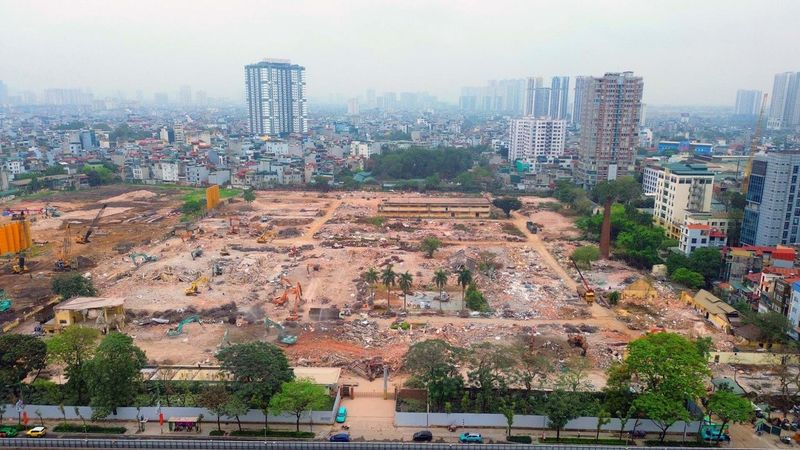
Gần 4.000 căn nhà ở dự án trên khu “đất vàng” Cao Xà Lá do Masterise Homes phát triển được phép bán cho người nước ngoài 🔗 MOI
TIN MỚI Theo Sở Xây dựng, 3.944 căn hộ tại khu chức năng đô thị số 233, 233B và 235 đường Nguyễn Trãi được phép bán cho người nước ngoài. Sở Xây dựng TP Hà Nội vừa có văn bản trả lời chủ đầu tư khu ch
Dính đòn tập kích của FPV cảm tử Ukraine, pháo phản lực Nga cháy lớn 🔗 MOI
Video: Lữ đoàn số 414 Ukraine Thông cáo của Lữ đoàn Hệ thống không người lái tấn công biệt lập số 414 “Magyar’s Birds” Ukraine viết: “Vào ngày 18/4, các quân nhân trong đơn vị chúng tôi cùng Lữ đoàn s
Con trai 16 tuổi hiến tế bào gốc cứu mẹ, cha rưng rưng nước mắt đứng chờ 🔗 MOI
Lưu Trạch Vũ - học sinh lớp 10 tại TP Thập Yển vẫn thường đến bệnh viện đón mẹ sau mỗi đợt hóa trị. Thế nhưng, vào tháng 11/2025, khi bước vào phòng bệnh, em sững lại khi thấy mẹ nằm bất động, gương m

Hiếu Thứ Hai, Đức Phúc 'cháy' cùng fan 🔗 MOI
Tiết mục lần đầu xuất hiện trên sân khấu concert Anh trai say hi , tại đêm diễn thứ 9, tối 18/4. Ca khúc từng được nhóm chọn dự thi tại một vòng đấu thuộc khuôn khổ chương trình năm 2024, hút hàng chụ

Hối hận vì chăm con mắc tay chân miệng sai cách 🔗 MOI
Bé Sam 10 tháng tuổi, con chị Minh Ngọc, là một trong những ca mắc tay chân miệng nặng đang điều trị tại Bệnh viện Nhi đồng 1, TP HCM. BS.CKII Dư Tuấn Quy, Trưởng khoa Nhiễm - Thần kinh, Bệnh viện Nhi

Tưởng rối loạn tiêu hóa, nhiều ca đến viện đã ung thư giai đoạn muộn 🔗 MOI
Nhầm lẫn với rối loạn tiêu hóa Ung thư đại tràng là bệnh đứng thứ 3 về tỷ lệ mắc và thứ 2 về tử vong, theo Tổ chức Y tế thế giới. Đáng chú ý, xu hướng trẻ hóa của bệnh đang diễn ra rõ rệt. Tỷ lệ mắc ở

Thủ phạm khiến hàng loạt ô tô, xe máy ở Hà Nội bị “tê liệt” 🔗 MOI
Thủ phạm khiến hàng loạt ô tô, xe máy ở Hà Nội bị “tê liệt” Theo Huỳnh Duy | 19/04/2026 08:15 AM | Công nghệ Theo dõi Cafebiz.vn trên Lực lượng chức năng đã tìm ra thủ phạm khiến hàng loạt xe máy, ô t
5 sai lầm khi dùng điều hòa mùa hè gây bệnh hô hấp 🔗 MOI
Theo ThS.BS Đặng Thành Đô, khoa Hô hấp, Bệnh viện Đa khoa Tâm Anh Hà Nội, điều hòa giúp cải thiện môi trường sống trong những ngày nắng nóng. Tuy nhiên, nếu sử dụng không đúng cách gây bất lợi cho hệ

Chứng khoán Rồng Việt tổ chức ĐHCĐ 2025 và công bố KQKD Q1/2026 🔗 MOI
TIN MỚI Tại ĐHĐCĐ cũng đã thông qua kế hoạch kinh doanh năm 2026 với doanh thu 1.319 tỷ đồng, lợi nhuận trước thuế 510 tỷ đồng cùng phương án phát hành cổ phiếu tăng vốn điều lệ lên 4.500 tỷ đồng. Đại

Video FPV cảm tử Ukraine tập kích ‘loạt kho chứa tên lửa Iskander’ ở Crưm 🔗 MOI
Video: Robert “Madyar” Brovdi/Telegram Trong thông cáo đăng trên mạng Telegram, sĩ quan Robert “Madyar” Brovdi, chỉ huy lực lượng hệ thống không người lái của Ukraine (USF) tuyên bố các đơn vị điều kh

Hơn 300 robot hình người thi chạy bán marathon tại Trung Quốc 🔗 MOI
Số lượng robot năm nay đông gấp nhiều lần so với năm ngoái, khi chỉ có 21 robot tham gia. Chúng cần vượt qua quãng đường dài 21 km bao gồm cả những đoạn dốc và công viên, đồng thời phải đối mặt với đị
Vườn quốc gia Tràm Chim nâng mức cảnh báo cháy rừng cấp nguy hiểm 🔗 MOI
Ông Phạm Thành Ngại - Chủ tịch UBND tỉnh Đồng Tháp (trái) - đi thực tế, khảo sát công tác phòng cháy ở Vườn quốc gia Tràm Chim - Ảnh: ĐẶNG TUYẾT Đoàn công tác của Chủ tịch UBND tỉnh Đồng Tháp đã khảo
Ảnh cưới Lương Thế Thành, Thúy Diễm được ‘tận dụng’, cái tát của Lê Phương ‘vang’ khắp nước 🔗 MOI
Ảnh cưới của Lương Thế Thành - Thúy Diễm ngoài đời chỉ thay đổi khuôn mặt cô dâu thành vợ chồng Hoàng Dũng và Mai trong phim Bóng ma hạnh phúc - Ảnh: ĐPCC Chi tiết vui này cùng với cái tát của người v
Minh Khải trong phim Bóng ma hạnh phúc gặp khán giả ở kịch Song trùng 🔗 MOI
Minh Khải vai Nhân trong vở kịch Song trùng - Ảnh: LINH ĐOAN Trong Bóng ma hạnh phúc (phát sóng lúc 20h từ thứ Hai đến thứ Bảy hằng tuần trên kênh THVL1), Minh Khải là Vũ, cậu con trai hiền lành, rơi

Sau Mr World, thêm đấu trường nam vương quốc tế đến Việt Nam 🔗 MOI
Tân nam vương Mister Cosmopolitan Shawn Lin Yu Hsiang đến từ Đài Loan - Ảnh: Mister Cosmopolitan Những năm gần đây, Việt Nam liên tục đăng cai tổ chức nhiều cuộc thi sắc đẹp quy mô quốc tế dành cho na
Độc đáo lễ hội 10 năm mới có một lần ở Đà Nẵng 🔗 MOI
Người dân cùng du khách tham gia trò chơi trong lễ hội - Ảnh: LÊ TÂY Trong hai ngày 18 và 19-4 (mùng 2 và 3 tháng 3 âm lịch), tại đình làng Cẩm Nê, Hội đồng chư tộc tổ chức hội làng năm Bính Ngọ 2026

Thuê xe Rolls-Royce để bán trà với giá gấp 3: Tưởng lời hóa lỗ dù rất đông khách 🔗 MOI
Một người đàn ông Ấn Độ đã thuê một chiếc Rolls-Royce để bán trà, đặt tên cho gian hàng là "Royal Chai" (Trà Hoàng Gia) - Ảnh cắt từ video Một người đàn ông đã thử nghiệm ý tưởng kinh doanh khác thườn

Hanoi Biennale đến Đà Lạt trong triển lãm 'Ký ức các thành phố' 🔗 MOI
Bờ rào dọc đường Lý Tự Trọng là không gian trưng bày các tác phẩm Hanoi Biennale 2025 - Ảnh: M.V. Tối 18-4, triển lãm "Ký ức các thành phố" khai mạc tại Cung đường nghệ thuật Đà Lạt (đường Lý Tự Trọng

Ngắm khoảnh khắc 'đáng yêu' của chim trảu đuôi xanh ở miền Tây 🔗 MOI
Mùa yêu chim trảu được báo hiệu bằng những tiếng kêu "tìm bạn tình" của chim trống - Ảnh: BÁ THI Trước khi mùa mưa bắt đầu cũng là lúc các loài chim bước vào mùa sinh sản, trong đó có chim trảu đuôi x

Đề xuất dời làng đại học Đà Nẵng xuống phía nam, nhiều ý kiến trái chiều 🔗 MOI
Sinh viên Trường đại học Sư phạm kỹ thuật (Đại học Đà Nẵng) - Ảnh: CHÂU SA Tại buổi làm việc của Chủ tịch UBND TP Đà Nẵng Nguyễn Mạnh Hùng với bốn phường phía nam, nhiều ý kiến đề xuất chuyển các trườ

Messi lập cú đúp giúp Inter Miami chiến thắng trong trận ra mắt huấn luyện viên mới 🔗 MOI
Messi với bàn thắng tuyệt vời mang về cho Inter Miami 3 điểm - Nguồn: MLS Trận đấu giữa đội chủ nhà Colorado Rapids với Inter Miami thu hút 75.824 khán giả đến sân, lượng khán giả cao thứ hai trong lị

Bóng đá Thái Lan nhận thêm thất bại cay đắng 🔗 MOI
Buriram không thể tạo thêm kỳ tích cho bóng đá Thái Lan - Ảnh: THAIRATH Rạng sáng 19-4 (giờ Việt Nam), câu lạc bộ Buriram United của Thái Lan đã chạm trán đại diện UAE - câu lạc bộ Shabab Al Ahli tron
Kỳ Duyên đáp trả fan chuyện xây trường, nhận bão tranh cãi 🔗 MOI
Hoa hậu Kỳ Duyên có nhiều phát ngôn gây tranh cãi trên mạng xã hội - Ảnh: FBNV Ngay sau khi ông Valentin Tran bất ngờ công bố từ bỏ bản quyền Miss Universe tại Việt Nam sau hai năm nắm giữ, nhiều ngườ
El Nino sắp xuất hiện, tác động đến mưa, nguồn nước ở Việt Nam thế nào? 🔗 MOI
Lòng hồ thủy điện Sơn La (khu vực Mường Lay, tỉnh Điện Biên) cạn trơ đáy, nứt nẻ năm 2023 - Ảnh: NGUYỄN KHÁNH Như Tuổi Trẻ Online đưa tin, Bộ Nông nghiệp và Môi trường vừa có báo cáo gửi Ban Chỉ đạo P
🔗 MOI
Vừa qua, rapper Ice Spice đã có một đêm không yên ả tại cửa hàng McDonald's (Mỹ) khiến dân tình một phen dậy sóng. Ice Spice vừa lên tiếng sau ồn ào bị fan tát vào mặt tại cửa hàng McDonald’s ở Los An
Công an giúp dân tìm lại người cha sau hơn 30 năm thất lạc 🔗 MOI
Hai cha con chị Lê Thị Hằng gặp lại nhau sau hơn 30 năm - Ảnh: Công an tỉnh Thanh Hóa cung cấp Theo Công an tỉnh Thanh Hóa, ngày 16-4-2026, chị Lê Thị Hằng (34 tuổi, trú xã Hậu Lộc, tỉnh Thanh Hóa) gử
Thủ lĩnh Hezbollah đưa ra điều kiện duy trì hòa bình với Israel 🔗 MOI
Nhóm vũ trang Hezbollah được cho là sở hữu sức mạnh lớn hơn cả quân đội Lebanon - Ảnh: REUTERS Báo New York Times đưa tin, ngày 18-4, trong bối cảnh lệnh ngừng bắn 10 ngày giữa Hezbollah và Israel đan
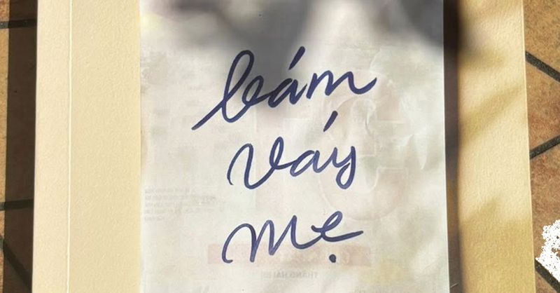
Bám váy mẹ: Bám và buông trong thế giới bé mọn này 🔗 MOI
Bìa quyển Bám váy mẹ (NXB Kim Đồng, 2026) Cái công việc bếp núc thường chỉ được ghi nhận bằng một dòng ở trang cuối cùng của cuốn sách. Trang sách này lại thường không mấy ai lật đến. Giờ thì từ trang
9 việc làm khiến thị lực ngày càng suy yếu 🔗 MOI
Việc ngủ quên khi đang đeo kính áp tròng tạo điều kiện cho vi khuẩn phát triển mạnh trên bề mặt mắt - Ảnh: AI Các vấn đề như mờ mắt, nhiễm trùng, tổn thương giác mạc hay bệnh võng mạc ngày càng phổ bi
Tin tức sáng 19-4: Hơn 16.300 người được hưởng lương hưu mới 🔗 MOI
Người cao tuổi nhận lương hưu tại một điểm chi trả ở Hà Nội - Ảnh: HÀ QUÂN Hơn 16.300 người được hưởng lương hưu mới Tin tức từ Bộ Nội vụ cho biết, trong quý 1-2026, cả nước có khoảng 3,49 triệu người
Thủ tướng có chỉ đạo mới thực hiện công tác đặc xá năm 2026 🔗 MOI
Thủ tướng yêu cầu thực hiện nghiêm túc, hiệu quả công tác đặc xá năm 2026 - Ảnh: TTO Theo đó, ngày 11-4, Hội đồng tư vấn đặc xá đã ban hành Hướng dẫn số 33 về việc thực hiện Quyết định số 457 của Chủ
Tòa áp dụng biện pháp xử lý chuyển hướng, cấm 1 bị can chưa thành niên đến quán karaoke, quán nhậu 🔗 MOI
Áp dụng biện pháp xử lý chuyển hướng đối với người chưa thành niên Căn cứ Luật Tư pháp người chưa thành niên, chủ tọa quyết định áp dụng hai biện pháp xử lý chuyển hướng gồm khiển trách và cấm đến địa

Hương vị Úc 2026: ẩm thực trở thành cầu nối chiến lược Việt Nam - Úc 🔗 MOI
Ông Bùi Xuân Cường - Phó chủ tịch UBND TP.HCM - phát biểu tại sự kiện Gala Hương vị Úc 2026 - Ảnh: TRẦN PHƯƠNG Ngày 18-4, Tổng lãnh sự quán Úc tại TP.HCM đã tổ chức đêm Gala trong khuôn khổ chương trì

Tiến hóa người tăng tốc, nhóm máu B áp đảo A 🔗 MOI
Tốc độ chọn lọc tự nhiên tăng mạnh sau khi con người chuyển từ săn bắt, hái lượm sang nông nghiệp - Ảnh: AI Trong nhiều năm, các nhà khoa học tin rằng tiến hóa gần đây của loài người diễn ra tương đối
Trái đất này là của... 🔗 MOI
- Sao tự dưng nhớ? - Nhớ năm xưa múa hát tập thể, tui và bạn bè cùng hát "Màu hoa nào cũng quý cũng thơm. Màu da nào cũng quý cũng thơm", thấy dễ thương quá! - Biết rồi, sao nay tâm tư? - Là vì lớn lê
Xây dựng 'xã hội phúc lợi' 🔗 MOI
Đã có gần 30.000 người dân TP.HCM được khám sức khỏe miễn phí trong ngày 17-4 - Ảnh: XUÂN MAI Hàng trăm bác sĩ đã đồng loạt có mặt tại 168 phường, xã, đặc khu để trực tiếp khám sức khỏe , tầm soát bện
Cháy nhà khu Ba Toa Đà Lạt, các lực lượng vất vả dập lửa 🔗 MOI
Căn nhà của ông Nguyễn Hữu Hà (ở giữa) bị ngọn lửa thiêu rụi hoàn toàn - Ảnh: M.V. Vụ cháy xảy ra trên đường Tô Ngọc Vân (khu vực Ba Toa, phường Cam Ly - Đà Lạt) khoảng 9h30 sáng 19-4 khiến cả khu dân
Thống nhất chủ trương nâng mức bồi thường nhà cửa tại dự án cao tốc Quy Nhơn - Pleiku 🔗 MOI
Công nhân khẩn trương tổ chức thi công trên công trình dự án đường bộ cao tốc Quy Nhơn - Pleiku - Ảnh: TẤN LỰC Cùng với việc nâng đơn giá bồi thường nhà cửa, vật kiến trúc, lãnh đạo tỉnh Gia Lai yêu c
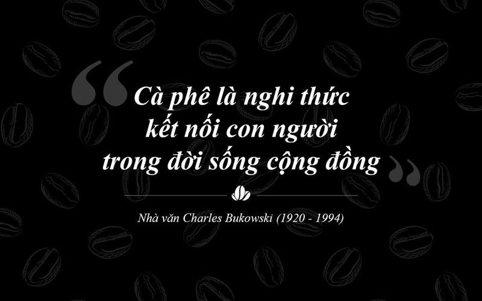
Diễn đàn Di Sản Cà Phê Thế Giới – Không gian đối thoại kết nối văn hóa và tri thức cà phê toàn cầu 🔗 MOI
TIN MỚI Với chủ đề "Từ những truyền thống đa dạng đến di sản sống chung của nhân loại", Diễn đàn Di sản Cà phê Thế giới góp phần làm rõ cách nhìn nhận cà phê như một "di sản sống" – có khả năng "kết n
Tổng Giám đốc Techcombank nhận thù lao gần 28 tỷ đồng, gấp 6 lần Chủ tịch Hồ Hùng Anh 🔗 MOI
TIN MỚI Ngân hàng TMCP Kỹ Thương Việt Nam (Techcombank) mới đây đã công bố báo cáo tài chính sau kiểm toán với nhiều số liệu đáng chú ý về thu nhập nhân sự. Theo báo cáo tài chính, năm 2025, Techcomba

Chủng mới lở mồm long móng lan rộng, nguy cơ xâm nhập Việt Nam 🔗 MOI
Ngày 19/4, Bộ Nông nghiệp và Môi trường báo cáo Chính phủ và phát đi cảnh báo về nguy cơ virus lở mồm long móng serotype SAT1 xâm nhập vào Việt Nam khi dịch bệnh trên thế giới diễn biến phức tạp, phạm
BIDV nhận giải quốc tế về truyền thông giáo dục tài chính 🔗 MOI
Trong lần đầu tiên tham dự, đại diện Việt Nam vượt qua hơn 1.000 hồ sơ đề cử từ nhiều quốc gia và vùng lãnh thổ, đạt vị trí cao nhất của hạng mục "Đổi mới trong tiếp thị đa kênh" (Innovation in Cross-
Nắng nóng uống bia có giải được nhiệt? 🔗 MOI
Trả lời: Uống bia lạnh chỉ làm giải nhiệt tạm thời, thực chất bia là cồn, lạm dụng đều gây hại. Uống nhiều bia gây giãn mạch, tăng huyết áp, đột quỵ... Ngày nắng nóng, cơ thể mất mồ hôi, mất nước, mệt
Nhật Bản và Hàn Quốc nói Triều Tiên vừa phóng loạt tên lửa đạn đạo 🔗 MOI
Trong thông cáo đưa ra sáng nay (19/4), Hội đồng Tham mưu trưởng Liên quân Hàn Quốc (JCS) cho biết các lực lượng Seoul đã phát hiện quân đội Triều Tiên phóng một số tên lửa đạn đạo từ khu vực Sinpho r
Nicole Kidman kể về ngày hay tin mẹ qua đời 🔗 MOI
Ngày 18/4, Nicole Kidman tham dự sự kiện HISTORYTalks ở Philadelphia. Trong cuộc trò chuyện với nhà báo Hoda Kotb, cô kể lại giây phút nhận tin dữ sau khi thắng giải Nữ chính xuất sắc cho vai Romy tro
Man City đấu Arsenal: Ánh nắng kỳ diệu của Pep Guardiola 🔗 MOI
Tháng Tư của Guardiola Pep Guardiola sở hữu bộ kỹ năng rất đặc biệt, những kinh nghiệm tích lũy qua sự nghiệp dài. Đội bóng của ông có thể chệch choạc đôi chút vào mùa thu; bản thân ông có thể cáu kỉn
Johnny Trí Nguyễn và dàn sao đóng 'Hộ linh tráng sĩ' 🔗 MOI
Tài tử trở lại màn ảnh rộng với vai thứ chính - Hữu tướng quân, người bảo vệ mộ vua Đinh Tiên Hoàng trước âm mưu phá hoại của kẻ thù. Ngoài diễn xuất, Johnny Trí Nguyễn chỉ đạo hành động, tuyển một số
Những thói quen tăng nguy cơ ung thư tuyến tiền liệt 🔗 MOI
Ung thư tuyến tiền liệt là một trong những bệnh lý ác tính phổ biến ở nam giới, đặc biệt nhóm trên 50 tuổi. Theo ThS.BS.CKII Phạm Thanh Trúc, Trung tâm Tiết niệu - Thận học - Nam khoa, Bệnh viện Đa kh
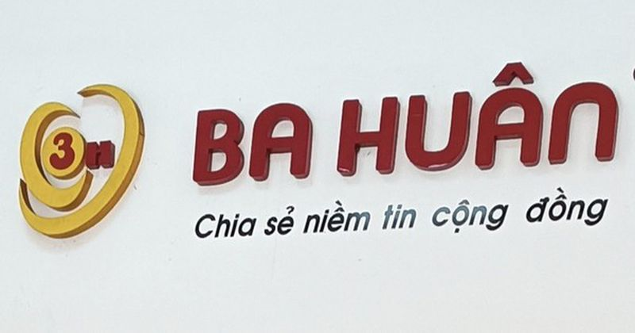
Công ty trứng Ba Huân nợ bảo hiểm xã hội kéo dài, rớt khỏi kệ nhiều siêu thị 🔗 MOI
Công ty trứng Ba Huân nợ bảo hiểm xã hội kéo dài, rớt khỏi kệ nhiều siêu thị Theo An Nam | 19/04/2026 11:43 AM | Xã hội Theo dõi Cafebiz.vn trên Thương hiệu trứng Ba Huân dường như vẫn chưa thoát khỏi
Iran siết chặt eo biển Hormuz, tuyên bố nhắm mục tiêu mọi tàu tiếp cận 🔗 MOI
TIN MỚI Hải quân thuộc Lực lượng Vệ binh Cách mạng Hồi giáo cho biết Iran đã đóng eo biển Hormuz sau khi Mỹ quyết định duy trì lệnh phong tỏa các cảng biển của Tehran, vi phạm những điều kiện của thỏa
HLV De Zerbi không tin Tottenham sẽ xuống hạng 🔗 MOI
"Tôi luôn tin vào chất lượng của các cầu thủ. Đây là thời điểm cần tinh thần và thái độ đúng đắn. Mùa giải chưa kết thúc, chúng tôi còn 5 trận và 15 điểm để cạnh tranh", De Zerbi nói sau trận hòa Brig
Messi lập cú đúp, Inter Miami thắng trận siêu kịch tính 🔗 MOI
Inter Miami bước vào chuyến làm khách trên sân của Colorado Rapids trong bối cảnh nhiều biến động sau sự ra đi bất ngờ của HLV Javier Mascherano. Dù vậy, trước sức ép từ hơn 75.000 khán giả, đội bóng
Kiểm tra thực địa, Bí thư Hà Nội chốt tiến độ hàng loạt dự án trọng điểm 🔗 MOI
TIN MỚI Chiều 18/4, Bí thư Thành ủy Hà Nội Trần Đức Thắng cùng đoàn công tác đã đi kiểm tra thực địa một số công trình trọng điểm trên địa bàn thành phố, gồm dự án đường Vành đai 1 (đoạn Hoàng Cầu - V
Bí thư Hà Nội chốt tiến độ 4 dự án trọng điểm chống ngập, tắc đường 🔗 MOI
Chiều nay, Bí thư Thành ủy Trần Đức Thắng cùng đoàn công tác kiểm tra thực địa tiến độ thi công tại các dự án: Đường Vành đai 1 (đoạn Hoàng Cầu - Voi Phục); hạng mục xây dựng tuyến thoát nước từ đường
Chính phủ yêu cầu địa phương hạn chế xây trụ sở, trung tâm hành chính mới 🔗 MOI
Chính phủ vừa ban hành Nghị quyết số 109 cập nhật, bổ sung Chương trình hành động của Chính phủ thực hiện Nghị quyết Đại hội 14 của Đảng và Kết luận số 18 của Trung ương về Kế hoạch phát triển kinh tế
Toto nắm giữ chìa khóa thành công của ngành chip bán dẫn trong năm 2026 🔗 MOI
Không phải Nvidia, hãng sản xuất bồn cầu Nhật Bản mới đang là bên nắm giữ "vũ khí" sống còn của ngành chip bán dẫn Băng Băng | 19/04/2026 10:10 AM | Công nghệ Theo dõi Cafebiz.vn trên Dù là hãng sản x
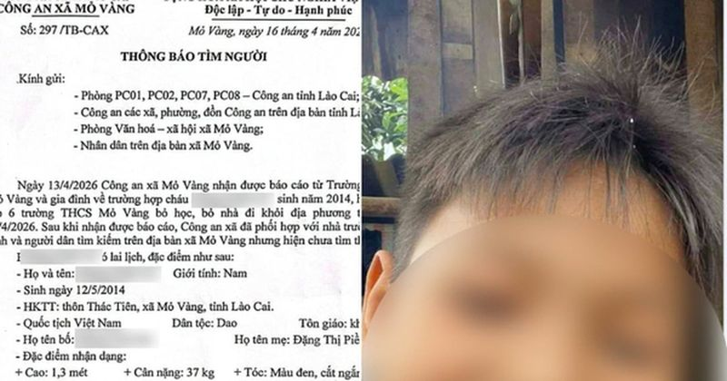
Một nam sinh 12 tuổi mất tích bí ẩn nhiều ngày 🔗 MOI
Một nam sinh 12 tuổi mất tích bí ẩn nhiều ngày Theo Như Quỳnh | 19/04/2026 09:49 AM | Xã hội Theo dõi Cafebiz.vn trên Một học sinh lớp 6 mất tích bí ẩn, có nhiều thông tin đồn đoán nam sinh đã bị sát

Bí ẩn gian lận công nghệ trong cờ vua: Cuộc đấu trí kéo dài 30 năm 🔗 MOI
Bí ẩn gian lận công nghệ làm chấn động giới cờ vua: 30 năm ròng rã mới tìm ra chân tướng Đại Nghĩa | 19/04/2026 08:45 AM | Công nghệ Theo dõi Cafebiz.vn trên Đang thắng bỗng tháo chạy vì lý do "vợ đẻ"

Cận cảnh Casino Đồ Sơn trước khi thành trung tâm thương mại 🔗 MOI
TIN MỚI Cận cảnh Casino Đồ Sơn trước khi thành trung tâm thương mại Casino Đồ Sơn nằm trên bán đảo Đồ Sơn (phường Đồ Sơn), từng là biểu tượng của ngành giải trí, du lịch của TP Hải Phòng. Ảnh: PT. Côn

Hành trình 3 . 000 Km của dàn Range Rover tới Tây Bắc: Trải nghiệm công nghệ xe vượt khó 🔗 MOI
Giá vé máy bay dịp 30-4, 1-5 tăng cao, nhiều chặng vẫn còn vé Theo Dương Ngọc | 19/04/2026 08:12 AM | Xã hội Theo dõi Cafebiz.vn trên Giá vé máy bay dịp nghỉ lễ Giỗ Tổ Hùng Vương và 30-4, 1-5 năm nay

Xây dựng kho dữ liệu ngành Khoa học và Công nghệ 🔗 MOI
Theo Kế hoạch chuyển đổi số ban hành kèm Quyết định 2100, Bộ Khoa học và Công nghệ dự định hình thành một hạ tầng số đồng nhất, đảm bảo an toàn, tin cậy. Theo kế hoạch này Bộ sẽ nâng cấp trung tâm dữ
Five Star Group tăng tốc với The Royal, quy tụ 86 đối tác phân phối chiến lược 🔗 MOI
TIN MỚI Sự kiện không chỉ đánh dấu màn khởi động chính thức cho chiến dịch ra mắt The Royal, mà còn phát đi tín hiệu tăng tốc mạnh mẽ của Five Star Group trong giai đoạn phát triển tiếp theo của Đại Đ

Nữ sinh Ams đỗ trường top 5 về Khoa học máy tính ở Mỹ 🔗 MOI
Cuối tháng 3, Trương Diệu Anh, lớp 12 chuyên Tin, trường THPT chuyên Hà Nội - Amsterdam (Ams), nhận thư trúng tuyển Viện Công nghệ Georgia (Georgia Tech). Dù đã đỗ 6 trường khác trước đó, nữ sinh vẫn
Vĩnh Long đón hơn 9,3 triệu khách du lịch nhờ các sản phẩm đa dạng 🔗 MOI
Du khách thích thú tham quan tại Nông trại Hải Vân - sân chim Vàm Hồ ở Vĩnh Long - Ảnh: HOÀI THƯƠNG Ngày 18-4, tại khách sạn Diamond Stars (phường An Hội, tỉnh Vĩnh Long), Sở Văn hóa, Thể thao và Du l

Sông băng trên dãy Andes biến mất hoàn toàn do biến đổi khí hậu 🔗 MOI
Ảnh vệ tinh cho thấy sông băng Cerros de la Plaza (trái) có một ít tuyết phủ vào ngày 28-12-2015 và không có tuyết vào ngày 28-2-2026 - Ảnh: AFP Hình ảnh vệ tinh cho thấy lớp băng trên ngọn núi này th
'Kiến trúc chữa lành' không còn là xu hướng 🔗 MOI
Các chuyên gia chia sẻ tại hội thảo "kiến trúc chữa lành" - Ảnh: CHÂU SA Hội thảo thu hút hàng trăm đại biểu là kiến trúc sư, nhà thiết kế, nhà quản lý và cộng đồng doanh nghiệp. "Kiến trúc chữa lành"
Phát hiện 'kho nước cổ đại' bí ẩn dưới Đại Tây Dương 🔗 MOI
Đại Tây Dương vẫn còn tồn tại nhiều bí ẩn chưa được khám phá - Ảnh: Jez Everest/Ecord IODP3/NSF Các nhà địa khoa học từ University of Leicester (Anh) vừa công bố phát hiện đáng chú ý: một hệ thống nướ
Mổ u phổi bằng robot khác nội soi truyền thống thế nào 🔗 MOI
TS.BS Nguyễn Anh Dũng, Trưởng khoa Ngoại Lồng ngực - Mạch máu, Trung tâm Ngoại Lồng ngực - Mạch máu, Bệnh viện Đa khoa Tâm Anh TP HCM, cho biết phẫu thuật nội soi truyền thống và nội soi có robot hỗ t
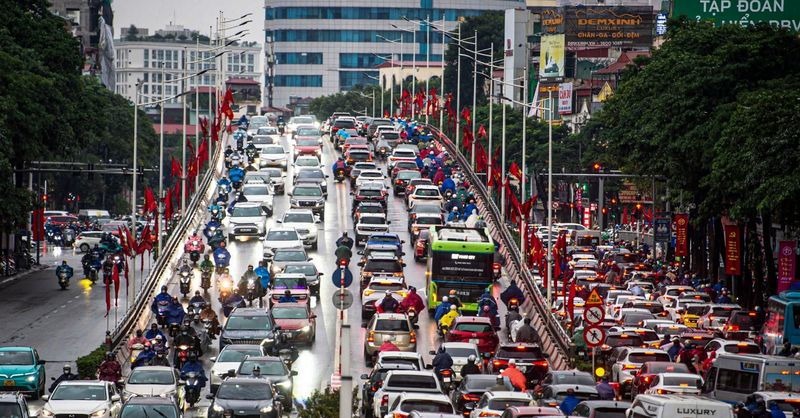
Cử tri Hà Nội kiến nghị hạn chế phương tiện cá nhân vào một số khu vực trung tâm 🔗 MOI
Cử tri các phường Vĩnh Tuy, Giảng Võ, Láng, Hoàn Kiếm, Cửa Nam cho rằng cần sớm có các giải pháp quản lý nhằm hạn chế phương tiện cá nhân tại một số khu vực trung tâm; xem xét điều chỉnh giờ làm việc,

Ajinomoto và sự thống trị ngành bán dẫn toàn cầu năm 2026 🔗 MOI
Tại sao cả ngành bán dẫn lại đang phụ thuộc vào một hãng bột ngọt Nhật Bản? Băng Băng | 19/04/2026 09:10 AM | Công nghệ Theo dõi Cafebiz.vn trên Hành trình thống trị ngành vật liệu bán dẫn của Ajinomo

Nga khiến thế giới kinh ngạc vì tạo ra loại tia gần như chạm đến giới hạn: Nhỏ tương đương một loại virus 🔗 MOI
Nga khiến thế giới kinh ngạc vì tạo ra loại tia gần như chạm đến giới hạn: Nhỏ tương đương một loại virus Theo Thùy Anh | 19/04/2026 09:05 AM | Công nghệ Theo dõi Cafebiz.vn trên Nguồn sáng nano hoạt

ACB thông báo khách hàng không chuyển khoản, rút tiền trong thời gian sau 🔗 MOI
ACB thông báo khách hàng không chuyển khoản, rút tiền trong thời gian sau Theo Khả Văn | 19/04/2026 08:45 AM | Công nghệ Theo dõi Cafebiz.vn trên Theo thông báo từ trang chủ Ngân hàng Thương mại Cổ ph

Việt Nam đặt mục tiêu đạt 72% hạ tầng Internet thế hệ mới trong năm nay 🔗 MOI
IPv6 là phiên bản địa chỉ Internet mới, được phát triển để thay thế IPv4 - nền tảng đang bộc lộ nhiều hạn chế. Việc chuyển đổi sang IPv6 được xem là mở rộng hạ tầng Internet trong giai đoạn tiếp theo.

Khuyến cáo về việc mua bán chứng khoán không phép: Hành vi vi phạm xử lý nghiêm 🔗 MOI
Nóng: Khuyên mua bán, nắm giữ chứng khoán khi chưa được cấp phép sẽ bị xử lý nghiêm Theo An Thái | 19/04/2026 08:02 AM | Kinh doanh Theo dõi Cafebiz.vn trên Một tổ chức vừa bị xử phạt hàng trăm triệu

Tình hình tài chính xấu đến khó tin của ông lớn sản xuất cáp 🔗 MOI
Mới đây, Công ty Cổ phần VKC Holdings (UPCoM: VKC) đã có văn công bố thông tin về tình hình tài chính gửi tới Uỷ ban Chứng khoán Nhà nước; Sở Giao dịch Chứng khoán Hà Nội. Dựa trên báo cáo tài chính n

Triều Tiên phóng loạt tên lửa đạn đạo ra biển 🔗 MOI
Số tên lửa này được phóng từ Sinpo, khu vực duyên hải ở miền trung Triều Tiên, ra vùng biển phía đông vào 6h10 hôm nay (4h10 giờ Hà Nội), Hội đồng Tham mưu trưởng Liên quân Hàn Quốc (JCS) cho biết. "Q

347 chủ xe máy, ô tô mang biển kiếm soát sau nhanh chóng nộp phạt nguội theo Nghị Định 168 🔗 MOI
347 chủ xe máy, ô tô mang biển kiếm soát sau nhanh chóng nộp phạt nguội theo Nghị Định 168 Phương Anh | 19/04/2026 07:03 AM | Xã hội Theo dõi Cafebiz.vn trên Nhiều chủ xe vi phạm khi tham gia giao thô

Giành nhau căn nhà sau cuộc đấu giá, hai bên cùng kêu cứu 🔗 MOI
Ngày 17/4, ông Nguyễn Nhất Duy, 46 tuổi, trú phường Nghĩa Lộ (Quảng Ngãi), cho biết đã gửi đơn đến cơ quan chức năng sau khi căn nhà tại số 118 Bà Triệu bị bà Lương Thị Nhung cùng khoảng 10 người phá

7 dấu hiệu bạn đang âm thầm giàu lên 🔗 MOI
Michael Kay, Chủ tịch hãng tư vấn tài chính Financial Life Focus (Mỹ), nói sai lầm lớn nhất của nhiều người là đo lường sự giàu có bằng cách so sánh với người khác. "Bạn không thể biết một người thực

Còn 0,1% sự sống lúc tai nạn hồ bơi, 7 tháng sau người đàn ông nói lời gan ruột 🔗 MOI
Khi sự sống đổi thay trong giây lát Mới đây, anh Cao Văn Ánh (40 tuổi, sống tại Lê Ích Mộc, Hải Phòng) đã chia sẻ tình hình sức khỏe và lòng biết ơn của mình với các bác sĩ tại Khánh Hòa đã kịp thời c

Bờ kè dự án hơn 220 tỷ ở Thanh Hóa bất ngờ sụt lún 🔗 MOI
XEM CLIP: Dự án đường giao thông từ kênh Phúc Ngư đến thôn Giang Sơn, xã Hoằng Tiến, được UBND huyện Hoằng Hóa (cũ) phê duyệt năm 2023 với tổng mức đầu tư hơn 220 tỷ đồng, do Công ty CP Đầu tư Xây dựn

Tình trạng của diễn viên Ngân Hòa sau 1 năm suy thận giai đoạn cuối 🔗 MOI
Diễn viên Ngân Hòa phát hiện bị suy thận mạn giai đoạn 3, thiếu máu và viêm gan khi thăm khám tại Bệnh viện Đại học Y dược TPHCM hồi năm 2023. Đến tháng 2/2025, nữ diễn viên được bác sĩ chẩn đoán suy

5 giờ Mỹ giải cứu phi công bị bắn hạ giữa chiến tranh Bosnia 🔗 MOI
Giữa thập niên 1990, Chiến tranh Bosnia bước vào thời kỳ căng thẳng nhất. Đây là cuộc xung đột nổ ra sau khi Nam Tư tan rã, với sự đối đầu giữa các cộng đồng sắc tộc tại Bosnia và Herzegovina, khiến đ

Mạng lưới căn cứ ngầm giúp tiêm kích Iran thoát đòn hủy diệt 🔗 MOI
Hình ảnh đăng trên mạng xã hội hôm 15/4 cho thấy chiến đấu cơ F-4 Phantom II và MiG-29 xuất hiện trên bầu trời thủ đô Tehran của Iran, được cho là nhằm hộ tống máy bay chở tư lệnh quân đội Pakistan As

Ấn Độ triệu Đại sứ Iran vì vụ tàu bị tấn công ở eo biển Hormuz 🔗 MOI
Bộ Ngoại giao Ấn Độ ngày 18/4 xác nhận hai tàu chở dầu thô mang cờ nước này đã bị tấn công khi đang cố vượt eo biển Hormuz cùng ngày. Vụ tấn công diễn ra sau khi Iran tuyên bố tái áp đặt hạn chế với h

Nóng: Khuyên mua bán, nắm giữ chứng khoán khi chưa được cấp phép sẽ bị xử lý nghiêm 🔗 MOI
TIN MỚI Theo Thông tin Chính Phủ, hiện trên các nền tảng mạng xã hội xuất hiện một số tổ chức, cá nhân thực hiện phân tích về thị trường chứng khoán, phân tích kỹ thuật các chỉ báo, đưa ra các khuyến
Bắt xe khách liên tỉnh chở 181 con khỉ, 16 con rái cá và 14 chim hồng hoàng 🔗 MOI
Bị can Chương và đàn khỉ bị thu giữ - Ảnh: Công an Nghệ An Ngày 18-4, thông tin từ Cơ quan cảnh sát điều tra Công an tỉnh Nghệ An cho biết đơn vị đã khởi tố vụ án, khởi tố bị can Nguyễn Văn Chương (34
TSMC dự kiến sản xuất thử nghiệm chip dưới 1nm vào năm 2029 🔗 MOI
TSMC dự kiến sản xuất thử nghiệm chip dưới 1nm vào năm 2029 Theo Đức Khương | 19/04/2026 13:30 PM | Công nghệ Theo dõi Cafebiz.vn trên TSMC đang hoạch định lộ trình sản xuất chip dưới 1nm, với mục tiê
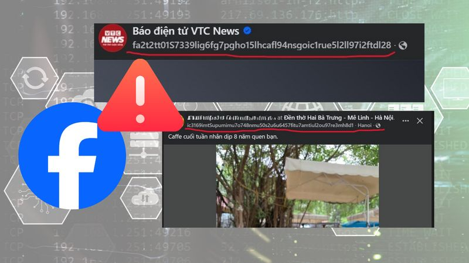
Facebook lỗi hiển thị thời gian đăng bài trên nền tảng web 🔗 MOI
Facebook lỗi hiển thị thời gian đăng bài trên nền tảng web Theo Minh Hoàn/VTC | 19/04/2026 12:37 PM | Công nghệ Theo dõi Cafebiz.vn trên Sáng 19/4, nhiều người dùng Facebook tại Việt Nam bất ngờ ghi n
Vì sao người xưa đại kỵ việc gõ bát đũa trong khi ăn cơm? 🔗 MOI
Đũa là vật dụng quen thuộc trong bữa cơm của người Việt, nhưng không phải ai cũng biết những điều kiêng kỵ khi sử dụng. Trong đó, hành động gõ đũa vào bát, đĩa khi ăn thường bị tránh. Theo quan niệm d
Nhiều trẻ Việt dậy thì sớm, ngừng phát triển chiều cao sớm 🔗 MOI
"Trẻ béo phì có thể phát triển xương sớm, dậy thì sớm nhưng lại dừng phát triển chiều cao sớm, là lý do ban đầu cao lớn hơn bạn bè nhưng bị 'vượt mặt' khi bước vào tuổi trưởng thành", TS Phan Bích Nga
Hải Phòng thu hồi 210 ha đất làm đường sắt cao tốc Hà Nội - Quảng Ninh 🔗 MOI
TIN MỚI UBND TP. Hải Phòng vừa trình HĐND thành phố thông qua danh mục 71 dự án, công trình phải thu hồi hơn 2.524ha đất. Trong đó, có 3 dự án trọng điểm về hạ tầng giao thông kết nối, có diện tích đấ
'So kè' độ sang chảnh của khoang thương gia 3 hãng hàng không hàng đầu thế giới 🔗 MOI
Trong bảng xếp hạng uy tín như Skytrax, vốn được xem như “Oscar của ngành hàng không”, những cái tên Singapore Airlines, Qatar Airways hay Emirates thường xuyên góp mặt trong nhóm dẫn đầu toàn cầu, đặ
Người đàn ông nước ngoài nổ súng sau va chạm xe ở Hưng Yên 🔗 MOI
Ngày 19/4, Công an tỉnh Hưng Yên phối hợp với Công an tỉnh Nghệ An bắt giữ Yu HaiYang, 38 tuổi, để điều tra về hành vi sử dụng trái phép vũ khí quân dụng. Kết quả điều tra ban đầu xác định, ngày 7/4,

'Cháy' vé máy bay các chặng du lịch dịp Lễ 30/4-1/5 🔗 MOI
TIN MỚI Chặng bay điểm đến du lịch ghi nhận tỷ lệ lấp đầy cao trên 90% gồm: TPHCM – Tuy Hòa, TPHCM – Côn Đảo, Hà Nội – Tuy Hòa, Hà Nội – Chu Lai và Hà Nội – Đồng Hới - Ảnh: NIA Theo thống kê của Cục H

Bruno Fernandes viết sử với MU, sắp phá kỷ lục Ngoại hạng Anh 🔗 MOI
Ngôi sao người Bồ Đào Nha đóng vai trò then chốt giúp MU đả bại Chelsea tại Stamford Bridge. Chính Bruno Fernandes đã có pha kiến tạo quyết định để Cunha ghi bàn thắng duy nhất của trận đấu, giúp đội

Sao nhí Thái Lan gây sốt khi đóng phim kinh dị Việt 🔗 MOI
Ngày 19/4, tác phẩm đạt doanh thu gần 60 tỷ đồng sau ba ngày ra mắt, dẫn đầu phòng vé trong nước. Nina là một trong những gương mặt được quan tâm khi vào vai Lua - cô bé vùng Tây Bắc. Nhân vật đóng va

Bí quyết ở cữ mùa nóng giúp sản phụ khỏe mạnh 🔗 MOI
Ở cữ là cách gọi dân gian, là thời gian chăm sóc hậu sản, tính từ thời điểm mẹ sinh con đến khoảng 4-6 tuần. Đây là giai đoạn cơ thể người mẹ cần nghỉ ngơi để tử cung co hồi về kích thước ban đầu, cơ

Đau lưng thường xuyên có phải do ung thư tụy? 🔗 MOI
Trả lời Ung thư tụy có nguồn gốc từ tế bào nội tiết (tạo các loại hormone giải phóng trực tiếp vào mạch máu) hoặc ngoại tiết của tuyến tụy (tạo men tụy và tiết vào trong ruột non). Bệnh thường không c

La Pura tăng tốc chuẩn bị cất nóc toà tháp đầu tiên vào tháng 5/2026 🔗 MOI
TIN MỚI Ghi nhận thực tế, tháp Zenia - phân khu ra mắt đầu tiên hiện đã hoàn tất sàn 37, đang lên tầng 38; tháp Risa lên đến tầng 22. Đồng thời tháp Lusso Saigon WorldHotels Residences vừa ra mắt cũng

Carrick ca ngợi tinh thần vượt khó của Man Utd 🔗 MOI
Hành quân tới Stamford Bridge, Man Utd thiếu vắng hàng loạt trụ cột nơi hàng thủ. Harry Maguire và Lisandro Martinez bị treo giò, Leny Yoro gặp vấn đề sát giờ thi đấu còn Matthijs de Ligt chấn thương

Messi ghi bàn quyết định chiến thắng cho Inter Miami 🔗 MOI
Phút 79 trận đấu trên sân Empower Field at Mile High ngày 18/4, Messi đi bóng bên cánh phải, xâm nhập vòng cấm của chủ nhà Colorado. Sau khi tìm thấy khoảng trống giữa hai hậu vệ, anh cứa lòng chân tr

Cụ ông đi rút tiền thì phát hiện 1,2 tỷ đồng trong tài khoản đã âm thầm bị chuyển đi: Công an lập tức vào cuộc điều tra 🔗 MOI
Cụ ông đi rút tiền thì phát hiện 1,2 tỷ đồng trong tài khoản đã âm thầm bị chuyển đi: Công an lập tức vào cuộc điều tra Theo Thu Thuỷ | 19/04/2026 08:37 AM | Xã hội Theo dõi Cafebiz.vn trên Từ một vụ

Lịch thi đấu bóng đá hôm nay 19/4: U17 Việt Nam đấu Indonesia 🔗 MOI
Lịch thi đấu bóng đá hôm nay NGÀY GIỜ TRẬN ĐẤU TRỰC TIẾP U17 ĐÔNG NAM Á 2026 - Bảng A 19/04 19:30 U17 Việt Nam vs U17 Indonesia TV360 19/04 19:30 U17 Malaysia vs U17 Timor Leste TV360 V-LEAGUE 2025/26

Chính quyền lên tiếng việc lấy phiếu khảo sát 'trả nhà lấy tiền' khu chung cư vạn dân 🔗 MOI
TIN MỚI Trao đổi với PV Tiền Phong, ông Tạ Việt Dũng, Phó Chủ tịch UBND phường Hoàng Liệt cho biết, việc lấy ý kiến khảo sát người dân khu chung cư HH Linh Đàm, VP3, VP5 thông qua “phiếu thu thập thôn
Các trường y dược trên cả nước tuyển sinh thế nào trong năm 2026? 🔗 MOI
Năm nay, Trường Đại học Y Hà Nội, Trường Đại học Y khoa Phạm Ngọc Thạch vẫn chỉ tuyển sinh theo hai phương thức là xét tuyển thẳng và xét điểm thi tốt nghiệp THPT. Trong khi đó, Trường Đại học Khoa họ
Vợ chồng cùng nhận bằng tốt nghiệp thạc sĩ loại xuất sắc 🔗 MOI
Trong lễ trao bằng tốt nghiệp mới đây của Trường ĐH Kinh tế Tài chính TPHCM, câu chuyện về một cặp vợ chồng cùng nhận bằng tốt nghiệp xuất sắc chương trình thạc sĩ đã trở thành điểm nhấn, thu hút sự c

5 thực phẩm tốt cho mắt nên ăn mỗi ngày 🔗 MOI
Sản phẩm từ sữa như sữa, sữa chua, phô mai tươi… chứa nhiều khoáng chất giúp cải thiện sức khỏe võng mạc và màng mạch. Nên bổ sung ít nhất một loại thực phẩm từ sữa mỗi ngày để hỗ trợ mắt. Sản phẩm từ

Loạt lô đất 'vắng chủ' ở Hoà Lạc; chủ đất Hưng Yên thấy nhà 'mọc' lên sau 40 năm 🔗 MOI
Chủ đất ở Hưng Yên 'bỏ quên' gần 40 năm, quay lại phát hiện đã có người xây nhà Theo trình bày của ông B. (ngụ tỉnh Hưng Yên) tại Bản án số 38/2023/DS-PT ngày 25/8/2023 của TAND tỉnh Hưng Yên, vào năm

Tranh phong cảnh Việt làm từ lá, hoa khô 🔗 MOI
Con đường đầy lá vàng trong bức tranh Biệt thự Đà Lạt 1 (2013), được giới thiệu tại triển lãm Cuộc chơi với lá của nghệ sĩ Tạ Hải, diễn ra ngày 15-19/4 tại Bảo tàng Mỹ thuật Việt Nam. Ông trưng bày hơ
Du lịch dịp lễ 'tăng nhiệt': Công suất phòng tăng cao, tour ngắn ngày sớm kín chỗ 🔗 MOI
Du khách đặc biệt chú trọng đến yếu tố tiện lợi và khoảng cách di chuyển ngắn trong các kỳ nghỉ lễ - Ảnh: HỮU HẠNH Càng đến gần dịp lễ Giỗ Tổ Hùng Vương cũng như dịp lễ 30-4 và 1-5, các công ty du lịc
Nhiễm vi khuẩn H. pylori có thể gây ung thư dạ dày, phòng lây nhiễm thế nào? 🔗 MOI
GS.TS Trần Thiện Trung trong một ca mổ ung thư dạ dày tại Bệnh viện Đại học Y Dược TP.HCM - Ảnh: Bác sĩ cung cấp Nỗi lo này càng tăng lên khi được giải thích rằng đây là các thương tổn tiền ung thư dạ
Nhiều loại ung thư gia tăng ở người trẻ châu Á, giới y khoa nỗ lực tìm lời giải 🔗 MOI
Bác sĩ Richard Quek - nguyên phó trưởng khoa ung bướu tại Trung tâm Ung thư Quốc gia Singapore - chia sẻ bên lề diễn đàn ung thư cùng Tuổi Trẻ Online ngày 18-4 - Ảnh: THU HIẾN Trong khuôn khổ diễn đàn
Ngày hội tuyển sinh lớp 10 ở ngôi trường THPT công lập ‘ít người biết’ giữa trung tâm TP.HCM 🔗 MOI
Cô Thùy Dương, giáo viên Trường THPT Nguyễn Thị Diệu (bìa phải), dẫn học sinh và phụ huynh lớp 9 tham quan trường - Ảnh: VĂN KHOA Ở phần đầu của ngày hội tuyển sinh vào lớp 10 , thầy Dương Văn Thư, Hi
'Du hành 16 vương quốc sách', học sinh TP.HCM dự hội thi 'Lớn lên cùng sách' 🔗 MOI
Thí sinh trải nghiệm qua các "vương quốc sách" - Ảnh: NGUYỄN HƯNG Hội thi "Lớn lên cùng sách" tại Đường sách TP.HCM có 2 phần. Phần 1 tham gia hoạt động trải nghiệm và thực hiện các yêu cầu của ban tổ
Hiệu trưởng trường THPT top đầu TP.HCM tư vấn thi lớp 10 khiến học sinh bất ngờ 🔗 MOI
Thầy Trần Công Tuấn, Hiệu trưởng Trường THPT Phú Nhuận (phường Đức Nhuận, TP.HCM), tư vấn cho học sinh lớp 9 trong Ngày hội tư vấn tuyển sinh lớp 10 - Ảnh: ĐỖ NGUYỄN Thầy Trần Công Tuấn - Hiệu trưởng
Những trường hợp thí sinh được miễn thi, bảo lưu điểm thi tốt nghiệp THPT 🔗 MOI
Thí sinh tham dự kỳ thi tốt nghiệp THPT năm 2025 - Ảnh: NAM TRẦN Để được miễn thi tất cả các môn trong kỳ thi tốt nghiệp THPT, bên cạnh các điều kiện chung, thí sinh còn phải đáp ứng các điều kiện về

Ngôi sao cầu lông nhận thưởng gần 1 tỉ đồng nhờ... chống tham nhũng 🔗 MOI
An Se Young (thứ 2 từ phải sang) nhận giải thưởng đặc biệt vì chống tham nhũng trong làng cầu lông nước nhà - Ảnh: CHOSUN An Se Young là ngôi sao thống trị làng cầu lông đơn nữ thế giới suốt 3 năm trở
Khán giả thích thú trải nghiệm rạp xiếc top 9 thế giới tại TP.HCM 🔗 MOI
Khán giả trải nghiệm múa rối nước trong buổi tham quan rạp xiếc và biểu diễn đa năng Phú Thọ trưa 18-4 - Ảnh: LINH ĐOAN Đây là hoạt động do Trung tâm nghệ thuật TP.HCM tổ chức nhằm quảng bá điểm diễn
Thanh niên cả nước chọn 7 chương trình, 16 chỉ tiêu thực hiện Nghị quyết Đại hội Đảng 🔗 MOI
Bí thư Thứ nhất Trung ương Đoàn Bùi Quang Huy yêu cầu cán bộ Đoàn học kỹ hơn, nghĩ sâu hơn, làm quyết liệt hơn, nói đi đôi với làm, lấy hiệu quả thực tế làm thước đo uy tín và trách nhiệm - Ảnh: QUANG
Tuổi trẻ Đại học Quốc gia, Đại học vùng tiên phong nghiên cứu khoa học và đổi mới sáng tạo 🔗 MOI
Gần 200 bạn thanh niên trẻ đến từ các đơn vị đại học quốc gia, đại học vùng trong cả nước tham dự hội nghị thanh niên tại TP Cần Thơ - Ảnh: LAN NGỌC Ngày 18-4, Hội nghị Đoàn Thanh niên - Hội Sinh viên

Thí điểm sách giáo khoa trên thư viện số cho trẻ khiếm thị 🔗 MOI
Học sinh chia sẻ tìm hiểu về kiến thức giới tính - Ảnh: UNDP Kỷ niệm Ngày Người khuyết tật Việt Nam 18-4, chương trình chung của Liên hợp quốc về hòa nhập người khuyết tật (UNJP), Viện Khoa học giáo d

Khủng hoảng tâm lý, thứ làm dịu cơn đau không nằm trong màn hình 🔗 MOI
Thạc sĩ Lương Dũng Nhân nói, thứ làm dịu cơn đau cho chúng ta không nằm ở màn hình - Ảnh: T.ĐIỂU Đó cũng chính là lý do khiến ông Lương Dũng Nhân cùng nhóm học trò của tiến sĩ Lê Nguyên Phương tổ chức

Đi làm nhiệm vụ về, thấy người khuyết tật khó nhọc gom lúa, cảnh sát cơ động dừng lại giúp 🔗 MOI
Cán bộ chiến sĩ cảnh sát cơ động vác lúa từ đường làng, vận chuyển về nhà giúp ông Hiển - Ảnh: PHI DŨNG Chiều 18-4, lúc làm xong nhiệm vụ, tổ công tác thuộc Phòng Cảnh sát cơ động
Hơn 20 người nhập viện nghi ngộ độc sau khi ăn bánh mì 🔗 MOI
Một bệnh nhi nghi ngộ độc do ăn bánh mì nhập viện Bệnh viện Đa khoa Diễn Châu, Nghệ An - Ảnh: TÂM PHẠM Chiều 18-4, thông tin ban giám đốc Bệnh viện Đa khoa Diễn Châu, Nghệ An cho biết bệnh viện này đa

Thắng Chelsea, Man United sắp trở lại Champions League 🔗 MOI
Niềm vui của các cầu thủ Man United sau khi ghi bàn vào lưới Chelsea - Ảnh: AP Theo thống kê ở trận này, Chelsea kiểm soát bóng hơn 60% và tung ra tổng cộng 20 pha dứt điểm nhưng chỉ có 1 cú sút trúng
Màn bứt phá ngoạn mục của Đỗ Hoàng Hên 🔗 MOI
Việc cây săn bàn hàng đầu như Alan đang chấn thương là cơ hội cho Hoàng Hên tiếp tục bứt phá - Ảnh: MINH ĐỖ Với cú đúp bàn thắng ghi được vào lưới Becamex TP.HCM vào tối 17-4 thuộc vòng 19 V-League 20
Hỏa hoạn gây thiệt hại 3 căn nhà ở khu Ba Toa Đà Lạt 🔗 MOI
Trích xuất camera, truy tìm người lấy 128 triệu đồng tại cây ATM ở Khánh Hòa 🔗 MOI
Người Việt có gu đọc sách tinh tế? 🔗 MOI
Người Việt ngày càng tìm đến sách ngoại văn, sách gốc để đón nhận tri thức nhân loại. Trong ảnh: độc giả lựa sách ở hiệu sách ngoại văn Inbook - Ảnh: Inbook Đây là chia sẻ trong một buổi giao lưu với
G-Dragon, Jacob Elordi và cách Chanel thay đổi luật chơi thời trang nam 🔗 MOI
G-Dragon - đại sứ toàn cầu châu Á đầu tiên của Chanel - xuất hiện tại show Métiers d’Art 2025-2026 diễn ra ở New York - Ảnh: Chanel Áo khoác tweed (chất liệu dệt thô, dày dặn, thường làm từ len) và tr
Thực thi quyền tiếp cận cho người khuyết tật: Nhìn thẳng khoảng cách giữa luật và thực tiễn 🔗 MOI
Tiết mục văn nghệ của các bạn khiếm thị - Ảnh: THANH HIỆP Hội thảo thu hút nhiều nhà quản lý, nhà khoa học và người trong cuộc với hơn 100 tham luận gửi về. Không chỉ dừng ở câu chuyện chính sách, hội
Huấn luyện viên Carrick: Tinh thần vượt khó đã giúp Man United đánh bại Chelsea 🔗 MOI
Huấn luyện viên Carrick (giữa) đặc biệt khen ngợi tinh thần của CLB Man United trong chiến thắng trước Chelsea - Ảnh: AP Hành quân đến sân Stamford Bridge vào rạng sáng 19-4, huấn luyện viên Michael C
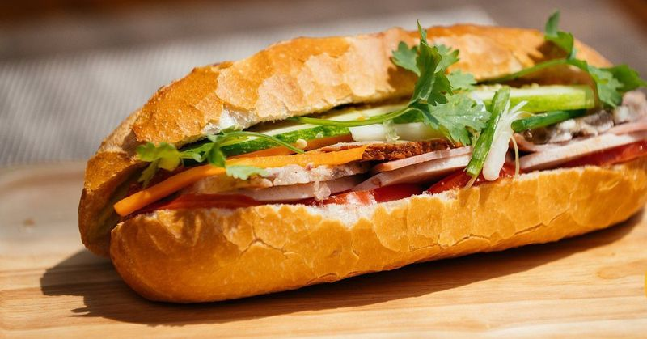
20 người nghi ngộ độc sau khi ăn bánh mì: Bộ Y tế yêu cầu khẩn trương lấy mẫu, xử lý vi phạm 🔗 MOI
Một bệnh nhi nghi ngộ độc do ăn bánh mì nhập viện Bệnh viện Đa khoa Diễn Châu, Nghệ An - Ảnh: TÂM PHẠM Cục An toàn thực phẩm nhận được thông tin ngày 18-4 trên địa bàn xã Diễn Châu, tỉnh Nghệ An ghi n

Nữ sinh viên ngành quan hệ quốc tế: Khiếm thị đời vẫn thú vị 🔗 MOI
Hà Mi trong tọa đàm Ánh sáng từ trái tim và khát vọng nguồn ảnh trường trung học thực hành - Ảnh do nhân vật cung cấp Từ những quan sát của một người mất thị lực bẩm sinh, tôi hiể
Kỳ thủ 15 tuổi Đầu Khương Duy thi đấu thăng hoa, tiến gần đẳng cấp Đại kiện tướng 🔗 MOI
Kỳ thủ Đầu Khương Duy (trái) giành chuẩn Đại kiện tướng thứ 2 - Ảnh: Bangkokchess Tại vòng 8 Giải Bangkok Chess Club Open 2026 diễn ra ngày 18-4, kỳ thủ trẻ Đầu Khương Duy bước vào cuộc đối đầu với hạ
Vòng 19 V-League 2025 - 2026: Áp lực lớn cho HLV Lê Huỳnh Đức 🔗 MOI
Áp lực cho Huấn luyện viên Lê Huỳnh Đức là không nhỏ Ảnh: N.K Bóng đá Việt Nam thường có quy tắc bất thành văn: thua 3 trận liền sẽ thay Huấn luyện viên trưởng, đặc biệt là với các đội bóng có tham vọ
Katy Perry đánh mất hình tượng trong mắt Justin Trudeau 🔗 MOI
Chuyện tình của Katy Perry và cựu Thủ tướng Canada Justin Trudeau đang gây chú ý toàn cầu - Ảnh: Cosmopolitan Katy Perry đã rời xa thời kỳ nổi loạn khi mới phát hành ca khúc I Kissed a Girl (2008) và
Hội thánh Đức Chúa Trời Mẹ làm 'Lễ vượt qua' trái phép, công an điều tra nghi vấn lừa đảo 🔗 MOI
Ông Cường, người được cho là đứng đầu nhóm "Hội thánh Đức Chúa Trời Mẹ"tại Quảng Trị làm việc với cơ quan công an - Ảnh: T.G. Ngày 19-4, Phòng An ninh nội địa Công an tỉnh Quảng Trị xác nhận vừa phối
Chi tiêu dè sẻn cho vừa túi tiền 🔗 MOI
Các siêu thị và nhà phân phối đã phải tung khuyến mãi, nỗ lực kìm giá để hỗ trợ người tiêu dùng - Ảnh: HỮU HẠNH Cục Thống kê (Bộ Tài chính) vừa công bố Báo cáo chỉ số giá sinh hoạt theo không gian (SC

Đa dạng hóa mô hình hợp tác công - tư 🔗 MOI

Không giữ giấy đăng ký kết hôn, không liên lạc được với chồng, muốn đơn phương ly hôn phải làm sao? 🔗 MOI
Chúng tôi không có con chung, không có tài sản chung, giấy kết hôn tôi không giữ, giờ muốn đơn phương ly hôn được không? Thủ tục thế nào? - Luật sư Trần Minh Hùng (Đoàn luật sư TP.HCM) trả lời: Luật s
'Hạm đội muỗi' Iran: 'Bóng ma' tại eo biển Hormuz 🔗 MOI
Một xuồng cao tốc và tàu hải quân của Lực lượng Vệ binh Cách mạng Hồi giáo Iran (IRGC) tại vịnh Ba Tư vào năm 2024 - Ảnh: NYT "Du kích trên biển" Theo tờ New York Times , "hạm đội muỗi" tập hợp các tà

Sự im lặng có vô tình 'bảo vệ' người bạo hành? 🔗 MOI
Nghi phạm Tạ Quốc Hùng tại nơi bạo hành dã man vợ - Ảnh: Công an Quảng Ngãi Nhiều vụ bạo lực gia đình gần đây gây bức xúc dư luận khi người chồng đánh vợ tàn bạo giữa ban ngày. Đây không p
Bộ Công an đề xuất tiếp tục giảm tội danh áp dụng hình phạt tử hình, mở rộng áp dụng hình phạt tiền 🔗 MOI
Ảnh minh họa một phiên tòa - Ảnh: ĐOÀN CƯỜNG Bộ Công an đang lấy ý kiến dự thảo hồ sơ chính sách dự án Bộ luật Hình sự (sửa đổi) đến hết ngày 7-5, trước khi trình Quốc hội cho ý kiến tại kỳ họp thứ 3,
Hansi Flick mạnh tay loại dàn sao Barca sau thất bại ở Cúp C1 🔗 MOI
MB đưa tin, Barca hiện đã bắt tay vào làm việc hướng đến mùa giải tới, với thông điệp mạnh mẽ từ thuyền trưởng Hansi Flick : sẽ có những thay đổi lớn trong đội hình. Theo nguồn trên, vị chiến lược gia
Lương, phụ cấp theo mức cơ sở 2,53 triệu đồng sẽ được tính thế nào 🔗 MOI
TIN MỚI Bộ Nội vụ đang lấy ý kiến góp ý dự thảo Thông tư hướng dẫn thực hiện mức lương cơ sở đối với các đối tượng hưởng lương, phụ cấp trong các cơ quan, tổ chức, đơn vị sự nghiệp công lập của Đảng,
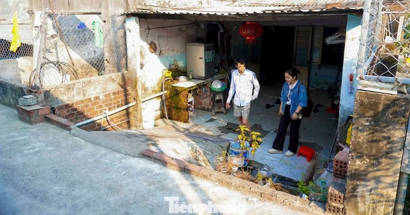
'Cơn ác mộng' của nhiều người dân Đà Nẵng, nhà thấp hơn cống thoát nước 🔗 MOI
TIN MỚI Theo ghi nhận, khu vực Khe Cạn (phường Thanh Khê) có địa hình trũng thấp, cốt nền nhà dân thấp hơn hệ thống cống thoát nước công cộng. Chính yếu tố này khiến nơi đây trở thành “rốn lũ” mỗi khi
Những yếu tố giúp dự đoán thời điểm mãn kinh 🔗 MOI
Theo dược sĩ Đỗ Xuân Hòa, Trung tâm Thông tin Y khoa, Bệnh viện Đa khoa Tâm Anh TP HCM, tuổi mãn kinh trung bình của phụ nữ Việt Nam dao động 48-50 tuổi. Tuy nhiên, độ tuổi bắt đầu tiền mãn kinh không
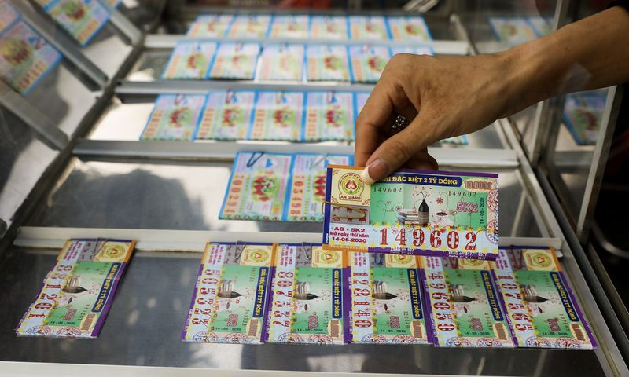
Đề xuất công an được phạt đến 100 triệu đồng với vi phạm kinh doanh xổ số 🔗 MOI
Tại hồ sơ dự thảo sửa Nghị định về xử phạt trong kinh doanh xổ số, Bộ Tài chính đề nghị bổ sung thẩm quyền xử phạt hành chính trong lĩnh vực kinh doanh xổ số với công an, chủ tịch UBND cấp tỉnh và giá
Nỗi đau và sự cô độc ám ảnh của nữ ca sĩ 'điên nhất showbiz Việt' 🔗 MOI
Dự án cộng đồng Red moon (Trăng đỏ - PV) do ca sĩ Đồng Lan khởi xướng thực hiện nhằm hướng đến phụ nữ và những bé gái tài năng có hoàn cảnh khó khăn. Ca sĩ và ban tổ chức muốn lan tỏa thông điệp về sự
Nữ diễn viên qua đời sau khi được phát hiện bất tỉnh trong hồ bơi 🔗 MOI
Ngày 19/4, PEOPLE đưa tin Nadia Farès qua đời sau 1 tuần được phát hiện bất tỉnh tại hồ bơi. Thông tin được 2 con gái của nữ diễn viên xác nhận với Hãng Thông tấn Pháp AFP ngày 17/4. Trong thông cáo,
3 năm trước thì "tẩy chay", giờ một quốc gia lại ngậm ngùi hỏi mua sản phẩm Nga: Moscow vẫn chưa trả lời 🔗 MOI
TIN MỚI Trong bối cảnh eo biển Hormuz bị phong tỏa và các nhà máy luyện nhôm khổng lồ tại vùng Vịnh trở thành mục tiêu của các cuộc tấn công quân sự, ngành công nghiệp thế giới – đặc biệt là Nhật Bản
Mourinho gây chấn động khi có thể trở lại dẫn dắt Real Madrid 🔗 MOI
Hiện Mourinho đang dẫn dắt Benfica và vẫn nuôi tham vọng chinh phục danh hiệu quốc nội. Tuy nhiên, hành trình của ông tại UEFA Champions League đã khép lại sau khi Benfica bị chính Real Madrid loại ở
3 cặp chị em tài sắc của showbiz Việt: Người viết hit triệu view, kẻ bỏ sự nghiệp 🔗 MOI
Lưu Thiên Hương - Lưu Hương Giang Lưu Thiên Hương - Lưu Hương Giang sinh ra và lớn lên trong môi trường âm nhạc chuyên nghiệp, cả cha lẫn mẹ đều là nhạc công và ca sĩ. Từ nền tảng đó, 2 chị em xây dựn
Khói lửa bốc cao hàng chục mét, bao trùm ngôi nhà ở Đà Lạt 🔗 MOI
Ngôi nhà trên đường Tô Ngọc Vân, phường Cam Ly – Đà Lạt, cháy dữ dội. Ảnh: X.N Khoảng 9h ngày 19/4, một vụ hỏa hoạn bất ngờ xảy ra tại ngôi nhà trên đường Tô Ngọc Vân, phường Cam Ly - Đà Lạt. Phát hiệ
Clip 'thót tim' xe bán tải bất chấp lao qua gác chắn tàu ở Hà Nội 🔗 MOI
XEM CLIP : Sáng 19/4, đại diện Cục CSGT (Bộ Công an) cho biết, Đội CSGT đường bộ số 14 (Phòng CSGT Công an Hà Nội) đã lập biên bản xử phạt tài xế xe bán tải cố tình vượt gác chắn tàu hỏa tại Km 10+400
Vì sao Arsenal vẫn sáng cửa vô địch Ngoại hạng Anh? 🔗 MOI
Cú sảy chân trước Bournemouth và chiến thắng thuyết phục của Man City trước Chelsea khiến cuộc đua vô địch Ngoại hạng Anh bất ngờ nóng trở lại. Khoảng cách giữa Arsenal và Man City bị rút ngắn từ chín
HLV Chelsea không rõ hậu quả nếu lỡ Champions League 🔗 MOI
Thất bại tối thiểu ngay tại Stamford Bridge khiến Chelsea dậm chân ở vị trí thứ sáu Ngoại hạng Anh với 48 điểm. Họ có nguy cơ bị các đối thủ xếp trên Liverpool (52 điểm) và Aston Villa (55) nới rộng c
Bộ Nội vụ thông tin về lịch nghỉ lễ Giỗ Tổ và 30/4 -1/5 🔗 MOI
Bộ Nội vụ thông tin về lịch nghỉ lễ Giỗ Tổ và 30/4 -1/5 Theo Ban Thời sự | 19/04/2026 11:13 AM | Xã hội Theo dõi Cafebiz.vn trên Bộ Nội vụ vừa xác nhận lịch nghỉ lễ Giỗ Tổ và 30/4 -1/5 năm nay sẽ giữ
Cháy nhà ở trung tâm Đà Lạt 🔗 MOI
Khoảng 9h30, lửa bốc lên tại căn nhà rộng khoảng 50 m2, một trệt một lầu làm bằng gỗ, ở góc đường Tô Ngọc Vân – Nguyễn Thị Định, phường Cam Ly. Người dân phát hiện, dùng nước dập lửa nhưng không hiệu
Tại sao da hay nổi mụn trong kỳ kinh nguyệt? 🔗 MOI
Chu kỳ kinh nguyệt được tính từ ngày đầu tiên của kỳ kinh nguyệt đến ngày đầu tiên của kỳ tiếp theo, có thể kéo dài 28 đến 35 ngày. Dược sĩ Đỗ Xuân Hòa, Trung tâm Thông tin Y khoa, Bệnh viện Đa khoa T
Công an Hà Nội sẽ làm việc với quản trị viên nhóm 'xe ghép', 'xe tiện chuyến' 🔗 MOI
Công an Hà Nội sẽ làm việc với quản trị viên nhóm 'xe ghép', 'xe tiện chuyến' Theo Anh Văn | 19/04/2026 11:00 AM | Xã hội Theo dõi Cafebiz.vn trên Công an Hà Nội sẽ phối hợp với các đơn vị mời chủ tài
Ông Vũ Đại Thắng làm Trưởng Ban Chỉ đạo công tác bảo vệ bí mật nhà nước TP Hà Nội 🔗 MOI
Chủ tịch UBND TP Hà Nội Vũ Đại Thắng đã ký quyết định về việc kiện toàn Ban Chỉ đạo công tác bảo vệ bí mật nhà nước TP Hà Nội. Theo quyết định, Trưởng Ban Chỉ đạo là ông Vũ Đại Thắng , Phó Bí thư Thàn
PAN Group công bố BCTC quý I/2026 với lợi nhuận gấp 40 lần, hoàn thành 87,5% kế hoạch 🔗 MOI
TIN MỚI Doanh thu tài chính tăng mạnh, lợi nhuận theo quý cao kỷ lục Trong quý I/2026, doanh thu hoạt động tài chính của PAN Group đạt 1.235 tỷ đồng, gấp 10 lần cùng kỳ. Đóng góp chính đến từ cổ tức n

Ông Nguyễn Đức Tài chia sẻ về thị trường và yếu tố địa chính trị năm 2026 🔗 MOI
Ông Nguyễn Đức Tài: Ảnh hưởng địa chính trị khiến nguồn cung ứng đi xuống nhưng thị trường vẫn đang may mắn Thúy Hạnh | 19/04/2026 08:57 AM | Kinh doanh Theo dõi Cafebiz.vn trên Chủ tịch MWG - ông Ngu

Tỉnh Bắc Ninh thu hồi đất của hơn 6.000 hộ dân làm 6 dự án khu đô thị, tổng kinh phí bồi thường hơn 1.800 tỷ đồng 🔗 MOI
TIN MỚI Quang cảnh hội nghị (nguồn ảnh: UBND tỉnh Bắc Ninh). Theo UBND tỉnh Bắc Ninh, chiều 17/4, tại trụ sở UBND phường Từ Sơn, lãnh đạo UBND tỉnh đã chủ trì hội nghị đôn đốc tiến độ bồi thường, giải

Bán vàng nhưng tiệm hẹn chuyển khoản sau, có đúng luật? 🔗 MOI
Nhưng hôm qua, khi tôi mang 30 chỉ vàng 9999 đến bán thì tiệm thông báo: Theo quy định mới, họ không được trả tiền mặt nữa mà phải chuyển khoản. Điều khiến tôi băn khoăn là họ không chuyển khoản ngay

3 thói quen 'vàng' giúp kéo dài tuổi thọ thêm gần 10 năm 🔗 MOI
Một nghiên cứu mới nhất năm 2026 vừa được công bố trên tạp chí EClinicalMedicine (thuộc hệ thống tạp chí danh giá The Lancet ) đã đúc kết ra một "Công thức trường thọ" cực kỳ đơn giản. Theo đó, nếu đư

Mùa kê vàng bên sông Son 🔗 MOI
Giữa tháng 4, nhiều ruộng kê trồng xen ngô, lạc dọc bờ sông Son, cách trung tâm Phong Nha - Kẻ Bàng khoảng 5 km, bước vào vụ thu hoạch. Trên ruộng, cây kê ngả màu vàng óng, thân thấp hơn cây ngô. Kê v

3 hòn đảo hoang sơ hút khách dịp 30/4 'cháy phòng' trước cả tháng 🔗 MOI
Cô Tô, Quảng Ninh Cô Tô là điểm đến ở miền Bắc được du khách rất yêu thích mỗi kỳ nghỉ 30/4-1/5 và dịp hè. Nơi đây được ưu ái mệnh danh là "thiên đường biển đảo miền Bắc" với gần 50 đảo nhỏ, những bãi

Sáng chế tự hào của nhà khoa học Việt Nam: Loại vắc xin thế giới mất 100 năm vẫn chưa sản xuất được 🔗 MOI
Sáng chế tự hào của nhà khoa học Việt Nam: Loại vắc xin thế giới mất 100 năm vẫn chưa sản xuất được Theo Ngọc Minh | 19/04/2026 09:30 AM | Công nghệ Theo dõi Cafebiz.vn trên Đây không chỉ là niềm tự h

Ngoại trưởng Nga cáo buộc EU, NATO liên tục vượt 'lằn ranh đỏ' của Moscow 🔗 MOI
Theo đài RT, phát biểu tại Diễn đàn Ngoại giao Antalya ở Thổ Nhĩ Kỳ ngày 18/4, nhà ngoại giao hàng đầu của Moscow đã bác bỏ điều ông gọi là "nhận thức ngày càng tăng của phương Tây" rằng Nga không có

Iran tuyên bố sẽ tấn công các tàu qua eo biển Hormuz 🔗 MOI
"Chúng tôi cảnh báo mọi tàu thuyền, bất kể loại nào, không nên rời vị trí neo đậu tại vịnh Ba Tư và biển Oman. Mọi nỗ lực tiếp cận eo biển Hormuz sẽ bị xem là hành động hợp tác với kẻ thù, và tàu vi p

Phó giáo sư toán vừa đứng lớp, vừa làm huấn luyện viên thể hình 🔗 MOI
Từ phòng gym đến giảng đường Khi nhiều người ở thành phố Charlottesville (bang Virginia, Mỹ) còn đang ngủ say vào lúc 4h sáng, Phó giáo sư Daniel James đã thức dậy và bắt đầu tập luyện. Đến 6h, ông có

Nhận định Thể Công Viettel vs HAGL: Bám đuổi ngôi đầu 🔗 MOI
Thể Công Viettel là đội đang gây ra áp lực lớn nhất với CAHN trong cuộc đua vô địch LPBank V-League. Dù kém đội đầu bảng 7 điểm nhưng cơ hội vẫn còn với đội bóng áo lính khi giải đấu còn 8 vòng đấu nữ

Atletico hụt danh hiệu Cup Nhà vua 🔗 MOI
Trên sân La Cartuja tối 18/4, Sociedad khởi đầu như mơ khi vượt lên ngay giây 14 nhờ cú đánh đầu của Ander Barrenetxea. Đây là bàn thắng sớm nhất trong lịch sử các trận chung kết Cup Nhà vua, phá kỷ l

Máy lọc không khí chưa tới 1 triệu đồng có thực sự đáng mua? 🔗 MOI
Tại các đô thị lớn, máy lọc không khí trong nhà là sản phẩm quen thuộc với nhiều gia đình. Ghi nhận tại các hệ thống bán lẻ điện máy cho thấy, phân khúc máy lọc không khí giá rẻ đang chiếm tỷ trọng lớ

Đối thủ dâng chức vô địch sớm cho Bayern 🔗 MOI
Tối 18/4, trong trận đấu sớm của vòng 30, các cầu thủ Dortmund để bóng chạm tay hai lần trong vòng cấm, tạo điều kiện cho Andrej Kramaric lập cú đúp từ chấm 11m ở phút 42 và 90+8. Đội xếp thứ hai chỉ

Bí quyết giúp nữ blogger giảm 18 kg trong 3 tháng 🔗 MOI
Từng rơi vào vòng xoáy của những phương pháp cực đoan như nhịn ăn hay dùng thuốc giảm cân, blogger nổi tiếng trên Tiểu Hồng Thư - Susann - đã phải trả giá bằng việc cân nặng chạm mốc 62 kg chỉ sau 2 t

Cây đa 'ôm trọn' cổng phủ trăm năm ở Nghệ An, rễ phủ kín vòm gạch 🔗 MOI
Ở nơi hợp lưu giữa Nậm Nơn và Nậm Mộ để thành dòng sông Lam, bản Cửa Rào 1 (xã Tương Dương, Nghệ An) vẫn giữ lại một dấu tích của quá khứ: cổng phủ Tương Dương. Theo người dân địa phương, trước năm 19

Cô dâu U50 ở Hưng Yên tái hôn sau 28 năm, đám cưới 55 mâm rộn ràng 🔗 MOI
Hành trình nuôi con vất vả Chị Phạm Thị Phượng (SN 1980, quê Thái Bình, nay là tỉnh Hưng Yên) đổ vỡ cuộc hôn nhân đầu tiên vào năm 18 tuổi. Khi ấy, chị mới mang thai con gái đầu lòng được 4 tháng. Dù

Biến cố của nữ đạo diễn là NSƯT giàu thành tích bậc nhất Việt Nam 🔗 MOI
Sinh năm 1952 tại Sài Gòn, rời gia đình từ tuổi 17 để đi theo cách mạng, bước vào điện ảnh từ những công việc âm thầm nhất rồi vươn lên thành một trong những đạo diễn nữ tiêu biểu của Việt Nam, cuộc đ

7 loại bữa sáng có thể 'tàn phá' thận bệnh nhân 🔗 MOI
Bác sĩ Hồng Vĩnh Tường (Hong Yongxiang), chuyên gia Thận học tại Đài Loan, chia sẻ nhiều trường hợp bệnh nhân đã bỏ thuốc lá, rượu bia, chuyển sang uống "sinh tố xanh" và ăn yến mạch mỗi sáng nhưng ch

MU đánh bại Chelsea, chạm tay vào tấm vé Champions League 🔗 MOI
MU xuất sắc giành 3 điểm trên sân khách - Ảnh: P.L Đội hình ra sân Chelsea : Sanchez; Gusto, Fofana, Hato, Cucurella; Caicedo, Enzo; Palmer, Fernandez, Neto; Delap. MU: Lammens; Dalot, Mazraoui, Heave

Rơi chiến thắng phút bù, Tottenham ngụp lặn trong nhóm đèn đỏ 🔗 MOI
Tottenham hai lần vượt lên dẫn trước nhưng vẫn đánh rơi chiến thắng, trong trận đấu cảm xúc của Xavi Simons phản chiếu rõ nhất sự nghiệt ngã của chủ nhà. Tiền vệ Hà Lan cởi áo mừng khi ghi bàn giúp To

Lợi ích sức khỏe của omega-3 🔗 MOI
Omega-3 là nhóm axit béo không bão hòa đa thiết yếu, giữ vai trò quan trọng trong cấu trúc màng tế bào và nhiều chức năng sinh lý của cơ thể. Do không thể tự tổng hợp, cơ thể cần được cung cấp omega-3

Vu khống, làm nhục người khác trên mạng có thể bị tăng án tù 🔗 MOI
Dự thảo hồ sơ chính sách sửa đổi Bộ luật Hình sự đang được Bộ Công an xây dựng, lấy ý kiến công khai đến hết ngày 7/5. Một nội dung đáng chú ý là đề xuất tăng mức phạt tù với một số tội diễn biến phức
Thi hành Lệnh bắt tạm giam đối với Nguyễn Gia Hoàng SN 1999 🔗 MOI
Thi hành Lệnh bắt tạm giam đối với Nguyễn Gia Hoàng SN 1999 Theo Duy Anh | 19/04/2026 10:50 AM | Xã hội Theo dõi Cafebiz.vn trên Nguyễn Gia Hoàng là đối tượng đã “giăng bẫy” đổi ngoại tệ, chiếm đoạt g
Bộ Y tế vào cuộc vụ hơn 20 người nghi ngộ độc bánh mì 🔗 MOI
Bộ Y tế vào cuộc vụ hơn 20 người nghi ngộ độc bánh mì Theo N.Dung | 19/04/2026 10:44 AM | Xã hội Theo dõi Cafebiz.vn trên Hơn 20 người ở Nghệ An nhập viện với triệu chứng nghi ngộc sau khi ăn bánh mì,
7 món nam giới nên dùng thường xuyên sau tuổi 30 🔗 MOI
Các loại đậu Đây là nguồn dinh dưỡng phong phú, hỗ trợ sức khỏe tim mạch, xây dựng cơ bắp, kiểm soát cân nặng và tiêu hóa. Chúng cũng cung cấp kẽm, magie và folate, góp phần giảm cholesterol và nguy
Khi nào trẻ chảy máu cam cần đi khám? 🔗 MOI
Trả lời: Chảy máu cam là tình trạng chảy máu từ niêm mạc mũi ra mũi trước hoặc chảy ra mũi sau xuống họng, thường gặp ở trẻ 2-10 tuổi. Chảy máu cam có 2 nhóm: chảy máu cam trước (máu chảy từ phần trướ
Điều gì xảy ra với hệ tiêu hóa khi uống nước chanh ấm mỗi ngày? 🔗 MOI
Có lợi cho gan Chanh giàu chất chống oxy hóa gồm vitamin C (axit ascorbic), flavonoid. Vitamin C có khả năng giảm stress oxy hóa - yếu tố liên quan đến sự phát triển của bệnh gan nhiễm mỡ. Các flavono
Slovakia sẽ kiện EU về lệnh cấm khí đốt của Nga 🔗 MOI
TIN MỚI Thủ tướng Slovakia Robert Fico. Tháng 1/2026, EU đã chính thức thông qua kế hoạch loại bỏ dần khí đốt qua đường ống của Nga vào năm 2027, bất chấp sự phủ quyết của Slovakia và Hungary. “Chúng
Dự báo thời tiết 19/4: Miền Bắc và Thanh Hóa mưa dông, nguy cơ sấm sét, mưa đá 🔗 MOI
Dự báo thời tiết 19/4: Miền Bắc và Thanh Hóa mưa dông, nguy cơ sấm sét, mưa đá Theo Huệ Nguyễn/VTC | 19/04/2026 09:48 AM | Xã hội Theo dõi Cafebiz.vn trên Ngày 19/4, miền Bắc và Thanh Hoá xuất hiện mư
Thái Lan cảnh báo khẩn về dịch "sốt đất": 732 ca nhiễm, 23 trường hợp tử vong 🔗 MOI
TIN MỚI Thái Lan vừa báo cáo một đợt bùng phát nghiêm trọng bệnh Melioidosis, hay còn gọi là "sốt đất", với 732 ca nhiễm và 23 trường hợp tử vong được ghi nhận kể từ đầu năm. Căn bệnh này do một loại

Bộ Y tế vào cuộc vụ hơn 20 người nghi ngộ độc sau khi ăn bánh mì ở Nghệ An 🔗 MOI
Ngày 18/4, trên địa bàn xã Diễn Châu (tỉnh Nghệ An) ghi nhận hơn 20 trường hợp phải nhập viện cấp cứu, n ghi do ngộ độc thực phẩm sau khi sử dụng bánh mì. Các bệnh nhân xuất hiện triệu chứng điển hình

MU khiến Chelsea thêm khốn đốn, Carrick chỉ yếu tố giữ vững top 3 🔗 MOI
Hoài nghi trở lại với MU và Carrick sau khi để thua 1-2 Leeds tại Old Trafford, lần đầu tiên sau 45 năm ở vòng đấu trước. Tuy nhiên, niềm vui đã trở lại với bầy ‘Quỷ’ trong chuyến làm khách Chelsea. Đ

Nhiều người bị ngứa do bọ chét 🔗 MOI
Điển hình là nam thanh niên 20 tuổi, sẩn đỏ ở tay chân có mụn nước, ngứa nhiều, tắm và đắp lá không bớt. Một bệnh nhi 7 tuổi có những tổn thương tương tự, bôi thuốc có giảm ngứa song vẫn xuất hiện nốt

Nhận định Man City vs Arsenal: 'Chung kết' sớm Ngoại hạng Anh 🔗 MOI
Chuyên gia trong các cuộc đua nước rút Man City đang nhắm đến cú ăn ba quốc nội đầy bất ngờ, thích thú viễn cảnh bắt kịp đội quân Arsenal lộ dấu hiệu mệt mỏi thời gian gần đây. Sau khi đăng quang cúp

Ồn ào MC Trác Thúy Miêu bỏ về ở sự kiện: Giá như cô chọn cách xử lý cao tay hơn! 🔗 MOI
Sự kiện ra mắt phim Phí phông tại TPHCM mới đây thu hút nhiều tên tuổi nổi tiếng tới tham dự. MC Trác Thuý Miêu là một trong những khách mời của buổi ra mắt. Tuy nhiên, khi nhân viên tổ chức sự kiện h

7 cách hỗ trợ giảm mỡ nội tạng nhanh 🔗 MOI
Mỡ nội tạng có thể bao quanh các cơ quan nội tạng quan trọng, bao gồm gan, tuyến tụy và thận. Tích tụ quá nhiều loại mỡ này có thể gây ra nhiều bệnh nguy hiểm như tiểu đường, viêm gan, tim mạch... Giả

Diễn viên Lan Phương báo tin vui 🔗 MOI
Diễn viên Lan Phương vui mừng thông báo phim Phí phông: Quỷ máu rừng thiêng mình tham gia đã đạt 50 tỷ sau 2 ngày chiếu sớm. Dù tới 24/4 mới chính thức ra rạp nhưng các suất chiếu sớm của Phí phông đã

Ca sĩ Đông Nhi, nhạc sĩ Nguyễn Thành Trung ra mắt MV 🔗 MOI
"Ám ảnh tháng Tư" trong Tết Thanh minh của Nguyễn Thành Trung Lấy cảm hứng từ những hình ảnh quen thuộc của tháng Tư như hoa loa kèn, hoa sưa và những cơn mưa đầu hạ, ca khúc được xây dựng như một khú

Thúy Diễm: 'Chồng chưa bao giờ lớn tiếng với tôi' 🔗 MOI
Vợ chồng diễn viên đăng ảnh cưới kỷ niệm 10 năm kết hôn hôm 14/4. Thúy Diễm thấy hạnh phúc khi tình cảm của họ vẫn khăng khít, mong cùng Lương Thế Thành nắm tay suốt chặng đường về sau. "Tôi ngưỡng mộ

Alvarez đá hỏng 11m, Atletico hụt chức vô địch Cúp Nhà vua 🔗 MOI
Atletico Madrid bước vào trận chung kết Cúp Nhà Vua với quyết tâm cao, nhưng sớm bị dội gáo nước lạnh khi Barrenetxea ghi bàn ngay giây thứ 14, đưa Real Sociedad vượt lên dẫn trước. Bị thủng lưới quá

Một Chủ tịch xã xin nghỉ việc 🔗 MOI
Một Chủ tịch xã xin nghỉ việc Theo Đức Ngọc | 19/04/2026 08:33 AM | Xã hội Theo dõi Cafebiz.vn trên Một Chủ tịch xã đơn xin thôi giữ chức vụ, xin nghỉ việc vì lý do sức khỏe. Chiều 18-4, tin từ lãnh đ

Hiệu trưởng ĐH Sư phạm Hà Nội mời đích danh học sinh đăng ký xét tuyển thẳng từ lớp 11 🔗 MOI
Thời gian gần đây, một số học sinh các trường THPT nhận được thư từ Hiệu trưởng Trường ĐH Sư phạm Hà Nội với nội dung mời đăng ký xét tuyển vào trường. Theo Trường ĐH Sư phạm Hà Nội, các thí sinh tiềm

Thái Lan cảnh báo dịch sốt đất: 732 Ca nhiễm và 23 ca tử vong năm 2026 🔗 MOI
Thái Lan cảnh báo khẩn về dịch "sốt đất": 732 ca nhiễm, 23 trường hợp tử vong Theo Chi Chi | 19/04/2026 08:19 AM | Xã hội Theo dõi Cafebiz.vn trên Biểu hiện lâm sàng của bệnh có thể gây nhầm lẫn vì th

Kết quả bóng đá hôm nay 19/4: MU hạ Chelsea, kịch tính chung kết Cúp Nhà vua 🔗 MOI
Kết quả bóng đá hôm nay NGÀY GIỜ TRẬN ĐẤU TRỰC TIẾP V-LEAGUE 2025/26 - VÒNG 19 18/04 18:00 Ninh Bình 3-0 PVF-CAND FPT Play, TV 360 18/04 18:00 Hồng Lĩnh Hà Tĩnh 1-0 Hải Phòng FPT Play, TV 360 U17 ĐÔNG

Dự án cầu Tứ Liên, Trần Hưng Đạo: Bố trí 142 căn hộ tái định cư tại Thượng Thanh 🔗 MOI
TIN MỚI Đại diện Sở Xây dựng Hà Nội cho biết vừa có báo cáo gửi UBND TP Hà Nội về bố trí quỹ nhà tái định cư để phục vụ công tác GPMB xây dựng 2 cầu trọng điểm trên địa bàn phường Hồng Hà là cầu Tứ Li

Nữ sinh lớp 8 được cậu nuôi học xa nhà 250km, đạt giải học sinh giỏi cấp tỉnh 🔗 MOI
Rời quê 250km lên ở với cậu để tiếp tục việc học Phải sống xa nhà hơn 250km để tiếp tục việc học, Lường Thị Ánh Dương vẫn nỗ lực vươn lên đạt giải Ba học sinh giỏi cấp tỉnh. Anh Lương Văn Duy, cậu của

Tiếp nhận 226 người do Campuchia trao trả, phát hiện đối tượng truy nã đặc biệt nguy hiểm 🔗 MOI
Tiếp nhận 226 người do Campuchia trao trả, phát hiện đối tượng truy nã đặc biệt nguy hiểm Theo Tr.Đức | 19/04/2026 08:06 AM | Xã hội Theo dõi Cafebiz.vn trên Nhằm trốn tránh pháp luật, Lê Văn Thủy - đ

Tại sao người cao tuổi dễ bị gãy cổ xương đùi? 🔗 MOI
Gãy cổ xương đùi là tình trạng gãy đoạn xương nằm giữa chỏm xương đùi và vùng liên mấu chuyển. Do đặc điểm giải phẫu và nuôi dưỡng máu, đây là một trong những loại chấn thương nặng, khó điều trị, nguy
Kết quả Ngoại hạng Anh 2025/26 - Vòng 33 mới nhất: MU gieo sầu cho Chelsea 🔗 MOI
Kết quả Ngoại hạng Anh 2025/26 - Vòng 33 (giờ Việt Nam) ngày - giờ trận đấu trực tiếp 18/04/2026 18:30:00 Brentford 0-0 Fulham FPT Play 18/04/2026 21:00:00 Leeds 3-0 Wolves FPT Play 18/04/2026 21:00:0
Nóng BXH Ngoại hạng Anh 2025/26 - Vòng 33 mới nhất: MU vững top 3 🔗 MOI
Bảng xếp hạng Ngoại hạng Anh 2025/26 STT Đội Trận T H B HS Điểm 1 Arsenal 32 21 7 4 38 70 2 Manchester City 31 19 7 5 35 64 3 Manchester United 33 16 10 7 13 58 4 Aston Villa 32 16 7 9 5 55 5 Liverpoo

Hoá chất Đức Giang phát thông báo quan trọng về dàn lãnh đạo cấp cao 🔗 MOI
DGC: Giá hiện tại Thay đổi Xem hồ sơ doanh nghiệp TIN MỚI Mới đây, Công ty Cổ phần Tập đoàn Hóa chất Đức Giang (mã DGC – HOSE) thông báo sẽ tổ chức Đại hội đồng cổ đông bất thường năm 2026 vào ngày 8/

New York đặt thùng rác công nghệ cao thay hàng ngàn chỗ đỗ xe 🔗 MOI
Theo quy định của chính quyền New York, từ năm sau, tòa chung cư có trên 30 căn hộ phải sử dụng loại thùng rác dung tích 4 m3, thay vì bỏ túi rác trên vỉa hè. Các khu dân cư mật độ thấp có thể chọn lo
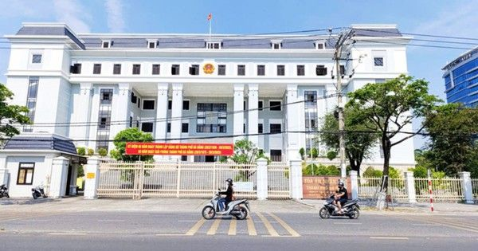
Bảo hiểm từ chối chi trả khi tàu cá bị sóng đánh chìm: Lập luận các bên và phán quyết của tòa 🔗 MOI
Gửi bình luận Bình luận ( 0 ) Hiện chưa có bình luận nào, hãy là người đầu tiên bình luận Xem thêm bình luận

3 loại cây phong thủy nên cân nhắc trước khi đặt trong nhà 🔗 MOI
Dây thường xuân và các loài dây leo trong nhà Dây thường xuân, trầu bà leo tường hay bất kỳ loại dây leo nào bám chặt vào tường nhà đều mang một thông điệp phong thủy không tốt lành. Trong một số quan

Điều gì xảy ra với hormone khi uống cà phê mỗi ngày? 🔗 MOI
Cà phê là một trong những loại đồ uống phổ biến và được ưa chuộng trên thế giới. Bên cạnh khả năng giúp tăng năng lượng, cà phê cũng có thể tác động đến nhiều loại hormone trong cơ thể. Làm tăng corti
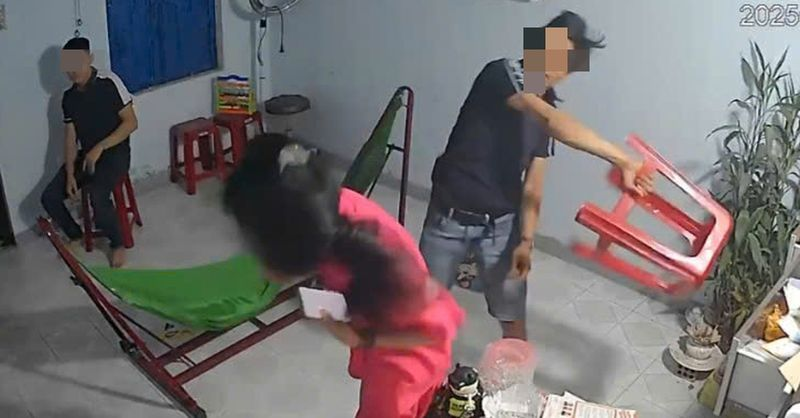
Gần 40 năm, tôi vẫn ám ảnh chuyện bạo hành dai dẳng ở nhà hàng xóm 🔗 MOI
Bạo hành, nỗi ám ảnh của tôi dù đã 40 tuổi - Ảnh minh họa: TRẦN MAI Tôi nhớ một đêm, rất lâu rồi. Khi đó, cha đi làm ăn xa, trong nhà chỉ có mẹ, tôi và anh trai. Cả xóm chìm trong bóng tối

Một dịch vụ ở Hà Nội đang miễn phí cho toàn dân nhưng nhiều người không biết 🔗 MOI
Một dịch vụ ở Hà Nội đang miễn phí cho toàn dân nhưng nhiều người không biết Theo Thu Phương | 19/04/2026 07:38 AM | Xã hội Theo dõi Cafebiz.vn trên Nhiều người phải bất ngờ sau khi đọc thông tin này.

Vì sao các chủ thuê bao di động bắt buộc phải thực hiện yêu cầu này theo quy định mới 🔗 MOI
Vì sao các chủ thuê bao di động bắt buộc phải thực hiện yêu cầu này theo quy định mới Theo Duy Anh | 19/04/2026 07:33 AM | Xã hội Theo dõi Cafebiz.vn trên Người dùng di động sẽ có tối đa 60 ngày (từ 1

Trà xanh chứa bao nhiêu caffeine? 🔗 MOI
Trà xanh là đồ uống phổ biến nhờ những lợi ích cho sức khỏe như hỗ trợ tim mạch, cải thiện chức năng não và thúc đẩy chuyển hóa. Tuy nhiên, không ít người băn khoăn về lượng caffeine trong loại đồ uốn

Xe ba bánh sidecar vượt thời gian, người Việt sưu tầm có giá trị hàng trăm triệu 🔗 MOI
Những chiếc xe ba bánh trong ký ức thời chiến tranh và thời bao cấp Từng là phương tiện gắn liền với thời kỳ chiến tranh và thời kỳ bao cấp, những chiếc xe sidecar (xe máy ba bánh gắn thuyền bên cạnh)

Nhận định U17 Việt Nam vs Indonesia: Thắng vào bán kết 🔗 MOI
Thất bại bất ngờ của U17 Indonesia trước U17 Malaysia lượt trận thứ 2 đặt cục diện bảng A vào thế khó lường. Ở lượt trận cuối, chủ nhà U17 Indonesia phải thắng U17 Việt Nam để đi tiếp, trong khi đoàn
Người dân lần đầu khám phá rạp xiếc nghìn tỷ hiện đại bậc nhất TPHCM 🔗 MOI
Lần đầu tiên, Rạp Xiếc và Biểu diễn đa năng Phú Thọ mở cửa đón người dân và du khách tham quan miễn phí. Tại đây, khán giả có cơ hội trải nghiệm múa rối nước và thưởng thức các tiết mục xiếc do những

6 không sau ăn để tránh tăng đường huyết, tiêu hóa kém 🔗 MOI
Trên thực tế, những gì bạn làm ngay sau khi ăn có thể ảnh hưởng trực tiếp đến quá trình tiêu hóa và mức đường huyết. Những hành động tưởng chừng đơn giản như nằm nghỉ hay đi lại nhẹ nhàng cũng có thể

Deeney: 'Arsenal có tâm lý như chú rể trước ngày cưới' 🔗 MOI
Trận đại chiến tại Etihad hôm nay được xem như "chung kết" Ngoại hạng Anh. Arsenal đang dẫn đầu với 70 điểm, nhiều hơn Man City 6 điểm và đá nhiều hơn một trận. Về các chỉ số phụ, Arsenal cũng nhỉnh h

Có nên mua xe tồn kho sản xuất năm 2024-2025? 🔗 MOI
Tôi đang cân nhắc đổi sang một mẫu SUV 5 hoặc 7 chỗ để phục vụ gia đình và công việc. Thời gian gần đây, thị trường xuất hiện làn sóng giảm giá mạnh, đặc biệt ở các xe tồn kho có năm sản xuất (số VIN)

Chú ruột ở Thanh Hóa mượn nhà đất hơn 30 năm, gia đình cháu đòi vẫn không trả 🔗 MOI
Cho mượn nhà đất, tình thân rạn nứt Theo trình bày của ông S. (ngụ tỉnh Quảng Ninh) tại Bản án số 140/2025/DS-PT ngày 17/12/2025 của TAND tỉnh Thanh Hóa, bố mẹ của ông có 3 thửa đất tại Thanh Hóa . Nă
Dự báo thời tiết 19/4/2026: Miền Bắc và Thanh Hóa mưa giông, nguy cơ lốc sét 🔗 MOI
Theo Trung tâm Dự báo khí tượng thủy văn quốc gia, ngày và đêm nay (19/4), khu vực Bắc Bộ và Thanh Hóa có mưa rào và giông rải rác với lượng mưa từ 10-30mm, cục bộ có nơi mưa to trên 80mm. Riêng thời

Chiến dịch Hồ Chí Minh diễn ra ngày nào? 🔗 MOI
1. Chiến dịch giải phóng Sài Gòn - Gia Định được chính thức mang tên Chiến dịch Hồ Chí Minh từ thời điểm nào? Ngày 14/4/1975 0% Ngày 16/4/1975 0% Ngày 26/4/1975 0% Chính xác Theo thông tin trên Thông

U23 Việt Nam: Không dùng quyền ‘trợ giúp’, ông Kim Sang Sik tính gì? 🔗 MOI
Không dùng quyền trợ giúp Quyết định không sử dụng 3 suất cầu thủ quá tuổi theo điều lệ ở sân chơi U23 của HLV Kim Sang Sik đang tạo ra nhiều tranh luận. Trong bối cảnh nhiều đối thủ trong khu vực và

Cầu ở Ninh Bình bị cấm lưu thông, người dân nói lý do vẫn liều mình trèo rào vượt qua 🔗 MOI
XEM CLIP: Cầu sắt bắc qua kênh Quần Liêu đã có từ lâu. Ban đầu, đây chỉ là cây cầu sắt nhỏ, phục vụ nhu cầu đi lại của người dân thôn Quần Liêu và khu vực lân cận. Năm 2004, cầu giàn thép đã qua sử dụ

Man Utd thắng Chelsea, tiến sát suất Champions League 🔗 MOI
Lần đầu sau hơn 6 năm, Man Utd mới thắng trên sân Stamford Bridge. Đội khách chỉ cần một cơ hội tốt để đem về ba điểm, trong khi chủ nhà phung phí nhiều tình huống ngon ăn với ít nhất ba lần dứt điểm

Vì sao nhiều người trẻ mắc ung thư dù sống lành mạnh? 🔗 MOI
Thông tin được bác sĩ Richard Quek, chuyên gia ung bướu từ Trung tâm Ung thư Parkway (Singapore) chia sẻ tại cuộc đối thoại về chăm sóc bệnh nhân ung thư do IHH Healthcare Singapore (IHH SG) tổ chức n

Kiểm tra để biết bạn có nguy cơ bị sương mù não không 🔗 MOI
Anh Chi (Theo Health ) Độc giả đặt câu hỏi về bệnh thần kinh tại đây để bác sĩ giải đáp
Muốn gọi cấp cứu cũng khó, người điếc cần videophone có phiên dịch 🔗 MOI
Hệ thống cuộc gọi video có hỗ trợ phiên dịch ngôn ngữ ký hiệu (videophone) rất cần cho người khiếm thính - Ảnh minh họa: TIO Không thể nghe, không thể nói thành lời qua điện thoại dù là video call, ng
Quán 'siêu sạch' và trường 'quốc tế' 🔗 MOI
Đừng uống cà phê 70% đậu nành, hãy uống nguyên chất - Tranh minh họa: Hải Nam Tôi nhớ một buổi sáng cách đây không lâu ở một thành phố, có quán cà phê với tấm biển lớn treo phía trên: "Cà phê siêu sạc
🔗 MOI
Mấy ông bụng bự hãy thử suất ăn healthy này xem có bớt mập không nè. Suất ăn bán trú bị cắt xén - Tranh: Hữu Lộc Suất ăn giảm bụng bự - Tranh: NOP Suất ăn bán trú vừa 'thiếu' vừa 'yếu' Cùng với tình t